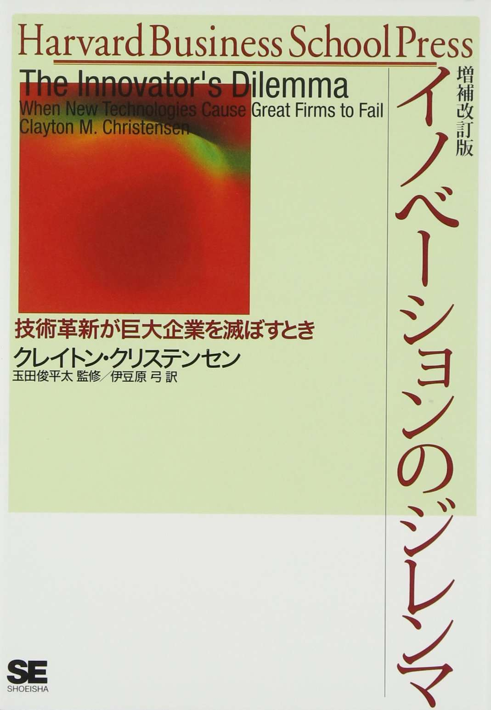
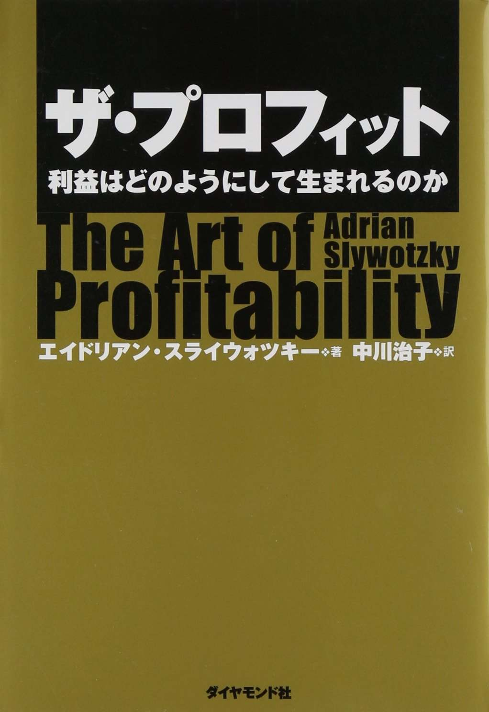
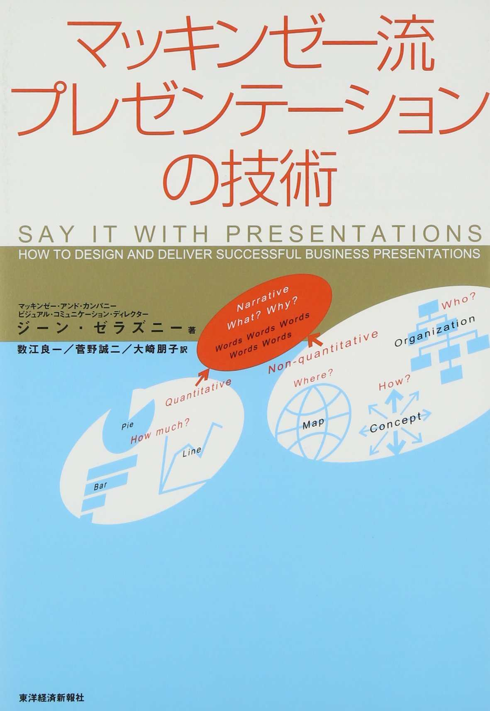

| オールタイムベストビジネス書100 | |
| Amazon.co.jp | |
| Amazon.co.jp (2014) | |
・作品一覧
・著者一覧
・奥付
※iPhone、iPod Touch、iPad用のKindleアプリからは、アプリ内にあるAmazon.co.jpサイトへのリンクはご利用いただけません。「この操作は現在対応していません。」というメッセージが表示される旨、ご了承ください。
Amazon.co.jpは2000年11月1日に、日本で書籍のオンライン販売を開始しました。13年にわたる書籍の販売で蓄積した販売データ、カスタマーレビューのデータをはじめとする各種データをもとに、 Amazon.co.jp独自の方法で、これだけは読んでおきたい「オールタイムベストブック」を選定しました。
2013年11月の「小説100」に始まり、「コミック100」 (2014年3月)、「児童文学100」(2014年6月)を発表し、多くの方にダウンロードいただいています。
このたび、第4弾として、「ビジネス書100」を発表します。
1世紀以上前に書かれた定番書から、新しいビジネスのヒントになる指南書まで、幅広いジャンルの作品を選出しました。「ビジネス読み物・経営」「マーケティング・セールス」「ビジネススキル」「自己啓発」の4ジャンルにわけて紹介しています。
このKindle版小冊子には、選定された本の内容紹介とAmazon.co.jpのお客様による「参考になったカスタマーレビュー」を掲載しています。
これまでの「オールタイムベストブック」同様、読書ガイドとしていつも手元に置けるよう、電子書籍という形で刊行しました。本との出会いや発見が、みなさまのビジネスシーンを支える一助となれば幸いです。
2014年10月吉日
Amazon .co.jp
泉 恵理子 (「日経ビジネスアソシエ」編集長)
「オールタイムベスト ビジネス書100」は、ビジネスの本質が学べる古典から、現代の「ホットイシュー(Hot Issue)」をえぐり出した現代書まで、実にバラエティーに富んでいます。
ビジネスの基本を学びたいなら、ピーター・F・ドラッカーの著書2冊『マネジメント』『経営者の条件』は必読です。続いて、各論を学びましょう。マーケティングを究めたければ、『コトラー＆ケラーのマーケティング・マネジメント』に進んでください。優れたマーケティング論を「コトラー流」にまとめた、百科事典のような本です。注目してほしいのは、本のタイトルに「第12版」と書かれている点。「マーケティングの本質は不変だが、変化する時代にも逐次対応すべき」と考えたコトラーは、「最新マーケティングを伝えたい」という思いから、今もって頻繁に、自ら本書を改定しています。この点がユニークであり、秀逸です。顧客にモノを買わせる「言葉の力」の重要性を説いた『シュガーマンのマーケティング30の法則』もいいでしょう。交渉術を学びたいなら、カーマイン・ガロ著『スティーブ・ジョブズ 驚異のプレゼン』、デール・カーネギー著『人を動かす [新装版]』があります。
日本の経営者が記した本も、押さえておきたいですね。代表的人物は、京セラの創業者で、日本航空(JAL)の再建を成し遂げたことでも知られる名経営者・稲盛和夫氏。稲盛氏の著作『アメーバ経営』は、「稲盛式経営学」の原点を知る基本です。再建を絶望視されていたJALがなぜ短期間で再生できたか、すんなりと理解できます。経営の指針、マーケティングの基本について示唆を与えてくれる『小倉昌男 経営学』も、読み応えがあります。
いま起きている「現在進行形」のビジネスに触れたければ、時代の先を読むジャーナリストが書いた良書がおすすめです。トーマス・フリードマンの『フラット化する世界』や、クリス・アンダーソン著『MAKERS』が、その代表格。フリードマンは、グローバル化、ITの進展でインドや中国が先進国の仕事を奪っていく様と、その対応策を示します。アンダーソンは、「3Dプリンターによるカスタム製造の時代」を予測した「21世紀型産業革命」について教えてくれます。
「ビジネス書」と一言でいっても、組織論、マーケティング論、経営論など、テーマは多岐に渡ります。その中から自分のニーズに合った本を探す時は、「どんな知識を得たいのか」、目的をはっきりさせることが大切です。目的を明確にした後、いざ本を選ぶ際に、この「100選」が良いガイドになってくれるはずです。
泉 恵理子（いずみ えりこ）
「日経ビジネスアソシエ」 編集長
東洋英和女学院高等部卒業。立教大学卒業後、三和銀行(現・東京三菱UFJ銀行)に総合職として入行。その後、米国ペンシルベニア大学大学院修士課程修了。日本経済新聞社米州総局(ニューヨーク)記者を経て、日経ホーム出版社(現・日経BP社)に入社。「日経マネー」「日経ウーマン」「日経おとなのOFF」「企画出版部」「日経ビジネスアソシエ」の記者を経て、「日経ビジネスアソシエ」の編集長。趣味は茶道(武者小路千家)、ゴルフ、旅行(特に京都)。元日本青年会議所会員。
・カスタマーレビューの数、平均カスタマーレビューの星の数は、2014年9月時点のものです。文庫版、単行本など異なる判型で出版された書籍の場合は、両方のデータを合算して掲載しています。改訂版については、新しい版のもののみとなります。
・「参考になったカスタマーレビュー」の日付は、そのカスタマーレビューが書かれた日付です。また、サイトに掲載された原文を抜粋しています。
・本書に記載している出版年月日は、2014年9月時点で販売・流通している判型の日付です。その本が初めて出版された日付ではありません。
・
のアイコンをタップすると、その書籍のAmazon.co.jp商品詳細ページへとびます。
※iPhone、iPod Touch、iPad用のKindleアプリからは、アプリ内にあるAmazon.co.jpサイトへのリンクはご利用いただけません。「この操作は現在対応していません。」というメッセージが表示される旨、ご了承ください。

※画像をダブルタップで拡大
アメーバ経営
稲盛 和夫(いなもり かずお)
日本経済新聞出版社 2006/9/14

 (91)
(91)
組織を「アメーバ」と呼ばれる小集団に分け、独立採算にすることで、一人一人が採算を考え、市場に柔軟な戦う組織を生む。小集団による部門別採算、自由度の高い組織、時間当り採算表、リーダーが育つ仕組み。苦境に陥ろうとも、びくともしない最強の組織をつくる「究極の稲盛流・経営管理手法」を明らかにする。
うきえもん
2006/9/28
ユニークで示唆に富む経営手法です
株主ばかり気にして社員のことを忘れている経営者が多い世の中ですが、そんな人たちにぜひ読んでもらいたい一冊。京セラやKDDIの経営に長年当たってきただけあり、机上の空論ではなく人の心理の細かいところまで配慮されているという印象。コンパクトに読みやすくまとめていますがもう少し具体例が多ければなお良かったです。

※画像をダブルタップで拡大
稲盛和夫の実学
稲盛 和夫(いなもり かずお)
日本経済新聞出版社 2000/11/6
 (106)
(106)
バブル経済に踊らされ不良資産の山を築いた経営者は何をしていたのか。儲けとは、値決めとは、お金とは実は何なのか。身近なたとえ話からキャッシュベース、採算向上、透明な経営など7つの原則を、「経営学」と「会計学」を結びつけてわかりやすく説明。ゼロから経営の原理と会計を学んだ、著者自身の経験を伝える。
Tatsuya
2003/5/17
会計に携わっている人は心を打たれます
会計監査に従事する会計士です。目からウロコが落ちるほど衝撃を受けました。技術系出身の経営トップがここまで会計の本質を理解し、自らの哲学・実際の現場に合わせて見事に運用。経営トップが同じ姿勢であれば会計監査は非常に楽になると思います。経営トップの方はもちろん、経理部門・会計士・税理士の方にもおすすめ。

※画像をダブルタップで拡大
イノベーションのジレンマ
クレイトン・クリステンセン Clayton M. Christensen(著)
玉田 俊平太(監修)
伊豆原 弓(翻訳)
翔泳社 2001/7/14
(138)
市場を一新するほどの革新技術が、市場と企業の序列をどのように変えていくかを分析した本。そのような「破壊的イノベーション」によって優良企業はそれまでの成功体験が足かせとなって追いつめられていく。優れた企業戦略ゆえに滅ぶジレンマの図式を分析し、破壊的イノベーションに対して経営者はどう対処すべきかを解説。
くろやぎ
2007/11/7
優良企業、優秀な経営者は技術革新に滅ぼされる？
優良な企業、優秀な経営者ほど「破壊的イノベーション」に遅れをとってしまう。このイノベーションのジレンマの所以を丁寧に解説し、後半ではジレンマを抜け出す方策も教えています。本書の最初の版がアメリカで発売されるや２つの大きな賞を受賞しベストセラーになりました。経営者はもちろん、技術者も興味深く読めます。
※画像をダブルタップで拡大
イノベーションへの解
クレイトン・クリステンセン Clayton M. Christensen(著)
マイケル・レイナー Micheal E. Raynor(著)
玉田 俊平太(監修)
櫻井 祐子(翻訳)
翔泳社 2003/12/12
(43)
『イノベーションのジレンマ』の続編。イノベーション論を深化させた著者の理論のさらなる展開。企業に平均以上の成長を維持し続ける方法として、「破壊的イノベーションのマネジメント法」という前例のない「解」を示す。成長を生み出すためにマネージャーが下さなくてはならない、9つの意思決定とは。
俊(とし)
2014/5/16
何という洞察と慧（けい）眼！しかし理論と実践のギャップは大きい
前作が破壊的技術の脅威が身辺に及んでいることを警告する内容であったのに対し、破壊的技術をいかに味方につけて応用し、組織のプロセスに組み込むには？という課題に対する「理論構築」の書。この本を羅針盤にして新事業の海に漕ぎ出す者たちも多いと思うが、海図と現実の航海の差はあまりにも大きい。ギャップを埋めていくのが現実世界の経営である。
※画像をダブルタップで拡大
ウィニング 勝利の経営
ジャック・ウェルチ Jack Welch(著)
スージー・ウェルチ Suzy Welch(著)
斎藤 聖美(翻訳)
日本経済新聞出版社 2005/9/12
(49)
強烈なリーダーシップでGEを世界的企業に育て上げ「20世紀最高の経営者」と呼ばれるジャック・ウェルチ。彼が「人材採用のチェックポイント」から「いやな上司への対処法」まで、ビジネスで成功するノウハウを驚くほど具体的に明かす。さまざまなポジションの人に役立つ実践的アドバイスを満載したビジネス指南書。
ohigo
2006/9/16
戦略と予算に関して大共感！
ウェルチが率直に語っており最高の会社を作れた所以がよく分かります。素晴らしいのは戦略と予算について。経営学者やコンサルタントはポーターを援用して説明しますが彼はそれをボロクソにこき下ろします。飛び切り優秀な経営者が最高の会社を作った秘密の一端はここにあるのでは？ここだけでも本書を買う価値があります。
※画像をダブルタップで拡大
小倉昌男 経営学
小倉 昌男(おぐら まさお)
日経BP社 1999/10/14
(94)
1976年2月にスタートした宅急便で、日本の生活を変えたヤマト運輸元社長・小倉昌男。自ら筆を執りその経営をケーススタディで書き下ろした苦闘の記録。家庭から小荷物を送るには郵便小包みしかなかった時代に宅急便の開発で運輸省や郵政省と闘い、宅急便市場を創った男の論理を展開した、企業家精神発揮の生きた教科書。
サラリーマン太陽
2006/3/3
感動的です。
この手の経営に関する本を読んで「おもしろい」「学べた」と思ったことはありましたが、感動したのははじめてです。本書に込められたメッセージは非常にわかりやすくて、本質的な正論は難解ではなくシンプルなのだと再認識しました。思わずヤマト運輸に転職したくなりますので、上司と喧嘩した日は読まない方がいいかもしれません。
※画像をダブルタップで拡大
完全なる経営
アブラハム・マズロー Abraham H. Maslow(著)
金井 寿宏(監訳)
大川 修二(翻訳)
日本経済新聞出版社 2001/11/29
(22)
著者は、人間の心の問題を深くとらえた人間主義的な心理学アプローチをとり、「自己実現」「至高体験」などの概念を生み出したアブラハム・マズロー。働く人々が、精神的に健康でいるためのマネジメントとは？個人の創造性を引き出し、仕事を通じて本当の「自己実現」を生む人間主義経営とはなにかを問う。
yutaka
2006/12/24
本気で実務に活かしたいなら
気が遠くなるほど壮大な理想を追っていますが、一部で誤解されてきたような怪しい自己啓発論の元祖ではありません。斬新なるがゆえ限界があったのでしょう。人的資源論を本気で実務に活かしたいと考える方には、ちまたに出回る粗悪な模造品でなく、本書に触れる事をおすすめします。少なくとも安易な引用で恥かく事はなくなります。
※画像をダブルタップで拡大
企業参謀
大前 研一(おおまえ けんいち)
講談社 1985/10/7
(36)
戦略的思考を実践する人材集団を作り、具体的な戦略思考を編みだし、実践する企業だけが生き残る。企業参謀集団の能力・構造・手法を豊富な事例で紹介。企業参謀としての戦略的思考を核に経営企画やコンサルティングの現場で頻繁に使われるフレームワークの活用法、それらを企業戦略策定に活かす方法や心構えなどを幅広く扱う。
Fuyuhiko Takaya
2012/1/7
大前研一氏の初期の傑作
戦略系コンサルティングが何かわからない人が理解できるように要点を分かりやすく、解説も図解を多用し分かりやすく書かれています。それにしても、こういう（実践的な）企業戦略の本が、1975年（この本の初版の発行年）という、マイケルポーターのバリューチェーン登場（1985年）よりも10年も前に発行されていたことに驚きます。
※画像をダブルタップで拡大
企業戦略論【上】基本編
ジェイ・B・バーニー Jay B. Barney(著)
岡田 正大(翻訳)
ダイヤモンド社 2003/12/4
(17)
競争戦略を超えた戦略論の金字塔・欧米MBA校テキストの翻訳版。従来の競争戦略を中心とした戦略論にリソース・ベースト・ビュー（経営資源に基づく戦略論）の概念を統合させた初のテキストであり、企業の目的から戦略の本質を明確に定義づけ、一貫した「成功を収めるための戦略」を網羅的に解説。
lemonerika
2004/1/4
すごい切れ味だ！
SWOTとはどのようなツールでどう使うのか？SWOTの各要素を分析するツールとしてのポーター理論の説明、限界、事例などです。各学説、概念などの経営学上での位置づけ、考え方の肝などをわかりやすく整理。知っているつもりでしたが、「目からうろこ」的な所がかなりありました。切れる人がわかりやすく書いた印象。
※画像をダブルタップで拡大
企業内人材育成入門
中原 淳(なかはら じゅん)
荒木 淳子(あらき じゅんこ)
北村 士朗(きたむら しろう)
長岡 健(ながおか たける)
橋本 諭(はしもと さとし)
ダイヤモンド社 2006/10/19
(34)
人材育成に関する心理学・教育学・経営学などの基礎理論を簡潔に紹介し、学習のメカニズム・動機づけの理論・学習環境のデザイン・研修の効果・機能するOJTの基本を分かりやすく解説。人が学び育つ理論について深い理解を得られる、人事・教育・研修担当者、経営幹部のための書。
pecoe-o
2008/1/11
部下を持つ上司にも読んでほしい本
企業の中にいると、日常業務をこなしながら後輩や部下を育てることは本当に難しいと感じます。そんな悩みもあって本書を手にとってみましたが学習のプロセスとメカニズムがわかりやすく書かれていました。人事部や総務部の教育担当者だけでなく、部下を持つ人や育成に悩んでいる人は一度目を通すといいのではと思いました。

※画像をダブルタップで拡大
[新訂] 競争の戦略
マイケル・E・ポーター Michael E. Porter(著)
土岐 坤(翻訳)
服部 照夫(翻訳)
中辻 万治(翻訳)
ダイヤモンド社 1995/3/15
(29)
産業が違い、国が違っても競争戦略の基本原理は変わらない。経営戦略論の古典として広く読まれ、ロングセラーを続けている、ポーター教授の代表作。1982年の初版より、省略されていた原注・参考文献を付し、内容の充実をはかった改訂版。
playingmanager
2010/7/20
「古い」とか関係なし...バーニーもポーターを前提にRVBを組み立てている
アンチポーターも競争と競争優位の戦略を読み込み、全体像を体系的かつ骨太に把握してほしい。初学者は理解が困難だがチャートをあわせて作っていけばより理解を促しやすい。事例があるから文章が多く、迷うのは分析がツリー上に何層も掘り下げられているから。その層を見失わないようにできればより理解は早いと思われる。
※画像をダブルタップで拡大
競争優位の戦略
マイケル・E・ポーター Michael E. Porter(著)
土岐 坤(翻訳)
中辻 萬治(翻訳)
小野寺 武夫(翻訳)
ダイヤモンド社 1985/12/14
(15)
前著『競争の戦略』の実践版で、産業クラスターの形成と衰退の実例を分析した内容。競争優位の確保が、高業績をいかに持続させるかのキメ手である。その源泉は、会社のどんな部門、どんな活動にも存在していると説く。
iuj-owada
2001/4/14
「スゴイ本だ」のひとことにつきる
丹念に読み進めるだけでも、戦略とは具体的にどんなもので、オペレーションをどう競争優位に活かすかが指摘されている。はやりのMBA本とは根本的に違うことが、明確に読み取れる。ちまたにあふれているカタカナのビジネス用語は何のためにあるのか疑問を持ったら、多くの場合本書でそれに関係する目的と意義を学び取れると思う。

※画像をダブルタップで拡大
経営戦略立案シナリオ
佐藤 義典(さとう よしのり)
かんき出版 2007/5/21
(15)
経営者の仕事は未来を、戦略を考えること。しかし「高級路線で差別化」などお題目のような戦略を唱えている会社が多い。本書は経営戦略立案の実践で使える戦略ツールを社長、事業部長、そして将来経営を担うべき人のために、体系的にまとめたものである。経営戦略のことがわからなかった人にも理解が深まる一冊。
もれしゃん
2008/2/22
手元に置いて置く本書です。
事例はどの業界にも共通して使えると言い切っているあたり、限られた業界にしか使えない訳でもない。本当は、こういった本に書かれていることを踏まえ自分はどういったことができるか、即ち実践に活かすことが重要である。いつものごとく本を読んだだけで終わってしまうことのないよう手元に置いて時々読み返す必要ありです。

※画像をダブルタップで拡大
経営戦略を問いなおす
三品 和広(みしな かずひろ)
筑摩書房 2006/9/14
(29)
大半の企業は戦略と戦術を混同しており、成長第一で事業を拡大したのに何の利益も出なかったという企業が少なくない。見せかけの「戦略」が、企業の存続を危うくする。目指すべきは、長期で見た利益を最大化すること。それを実現する戦略は、突き詰めれば人に宿る。現実のデータと事例を数多く紹介し、実践的戦略論を説く。
海援隊
2007/3/15
世の中で戦略を作らされている人たちみんなに読んでもらいたい一冊
経営の素質を持った人材をできるだけ早期に選抜し、様々な試練を与えた上で10年以上の長期に経営を委ね、戦略も当然経営者が策定すべきというのが著者の主張。「（社長の）長任期は高収益を保証しませんが、短任期の連続は低収益を不可欠とします」ということをデータで裏づけながら結論づけているのは、なかなか清々しい。
※画像をダブルタップで拡大
現場力を鍛える
遠藤 功(えんどう いさお)
東洋経済新報社 2004/2/12
(45)
トヨタ、花王、アスクル、ドン・キホーテなどの「強い企業」は、みな「強い現場」を持っている企業であった。早稲田大学ビジネススクールで人気の講座「現場学」の授業内容をもとに、体系化した一冊。競争力の源泉となっている「強い現場」とは何であるかを詳しく紹介し、その現場力の実践的な鍛え方を伝授する。
海援隊
2006/8/27
読者と同じ目線に立って現場の大事さを説く良書
経験に基づく地に足のついた記述にあふれていて説得力がある。大層なビジョンや戦略を掲げて実践できない組織、トップマネジメントがお題目として「現場主義」や「権限委譲」などを唱えるものの実態が伴わない組織は、実践できていない場合がほとんど。どのように実践するのかまで踏み込んで記述している点で有益だと思う。
※画像をダブルタップで拡大
ザ・ゴール
エリヤフ・ゴールドラット Eliyahu M. Goldratt(著)
三本木 亮(翻訳)
ダイヤモンド社 2001/5/17
(244)
主人公である工場長の夫婦間の葛藤も織り交ぜ、アメリカ製造業の競争力を復活させたTOC（制約条件の理論）を解説した小説。業務改善に挑む登場人物の苦悩や目標達成の興奮が伝わってきて、ビジネスの醍醐味を感じさせる。会計情報の正しい見方や落とし穴や、「効率化」の陰に隠された諸問題を浮き彫りにし、複雑な業務改善のノウハウがわかりやすく盛りこまれている。
ピンク太郎
2006/8/5
問題解決の姿勢に注目
アメリカでオペレーションマネージメントの授業でも触れられるというこの本。製造業でどのように生産効率を高めるかという命題に答えているがおもしろいのは問題解決のプロセス。現場や営業サイドと連携し、単に製造するだけに留まらない効率化が図られている過程は実に勉強になる。縦割り的な日本の大企業の人にはおすすめかも。
※画像をダブルタップで拡大
ザ・チョイス
エリヤフ・ゴールドラット Eliyahu M. Goldratt(著)
岸良 裕司(監修)
三本木 亮(翻訳)
ダイヤモンド社 2008/11/7
(41)
企業は高度に複雑化しているが「何が本当に重要か」を見極められれば、企業は短期間に著しいパフォーマンスの向上を成し遂げることができる。本書では博士と娘の会話を通じ「ものごとはそもそもシンプルである」「人はもともと善良である」という2つの信念の根本的なあり方を説明、深遠な思考に基づいたアプローチを提唱。
がちゃお
2008/12/25
因果関係の理解が重要
生産管理、プロジェクト管理、会計などに対する個々の方法論の解説ではないので、即現場で実践して効果が出るようなものは得られないと思います。私たち個々を取り巻く個別の状況・環境に適した方法論（＝ソリューション）を私たち自身が生み出すために何が必要なのかを精神論ではなく科学的に証明しているという感じです。

※画像をダブルタップで拡大
ザ・プロフィット
エイドリアン・スライウォツキー Adrian J. Slywotzky(著)
中川 治子(翻訳)
ダイヤモンド社 2002/12/13
(67)
大企業の戦略企画部門で働くスティーブは自社の業績落ち込みに悩んでいた。そんなとき「ビジネスで利益が生まれる仕組みを知り尽くした男」デビッドと出会う。ビジネスで利益を生み出すには？ビジネスの最重要テーマである「利益」。それを生み出す秘訣を23のパターンに分類し、小説形式でわかりやすく解き明かす。
kaz0775
2004/11/13
ビジネスモデルを明晰に分類
「ビジネスモデル」という外来語は市民権を得たが、具体的にどのように定義・分類されるのか、明確な答えはなかった。本書は、具体的な商品・サービスを解析して、23のビジネスモデルに分類し、解説している。興味深く、今後期待できそうなのが、スイッチボックス型だった。これはまだ発展の途上だと思うが、興味をひいた。
※画像をダブルタップで拡大
最強組織の法則
ピーター・M・センゲ Peter M. Senge(著)
守部 信之(翻訳)
徳間書店 1995/6/14
(30)
音を立てて崩れ去った日本の「経営神話」。終身雇用制も崩れつつあるなか、チームの問い直しを迫られている日本企業の道は、自らが学習機能を持った「ラーニング・オーガニゼーション」となる他にはない。「最強組織の条件---ラーニング・オーガニゼーションとは何か」から始まる５部構成。
ぷーさん
2005/7/31
業績が悪い部門のマネージャーは、ぜひ読んで欲しい。
部門の方向性が良く見えない、仕事の連携が取れていない、言っても無駄だと上司に口をつぐむ。業績が悪くなるとこのような現象がよく起こると思います。本書はそういう状況から脱出するために、もしくはそういう事態に陥らないために読む本です。マネージャーやチームリーダーなど人を動かす立場の方はぜひ読んでほしい一冊。
※画像をダブルタップで拡大
最高のリーダー、マネジャーがいつも考えているたったひとつのこと
マーカス・バッキンガム Marcus Buckingham(著)
加賀山 卓朗(翻訳)
日本経済新聞出版社 2006/1/14
(53)
リーダーは情熱的で魅力的でなくてもいい。弁舌に長けていなくてもいい。ただ明確であればいい。トップクラスの人たちの「どんな行動のなかにリーダーシップやマネジメントが存在するのか」「そうした行動はどんな欲求や欲望によって生み出されるのか」。彼らだけが知っているビジネスを支配する隠れた原則を明らかにする。
郷好文
2006/2/12
奇抜な構成、優れたビジネス書
成功する結婚のギャラップ調査の話から始まって、あいまいなマネジャーとリーダーの違いをそれぞれたった一行でまで絞りこんであざやかに説明。マネジャー論、リーダー論に続く第5～7章も出色（しゅっしょく）。自分がしたくないことを見つけ出し、それをやめる。それだけのことだが、語り口はまさにすぐれた「リーダー書」となっている。
※画像をダブルタップで拡大
3分間コーチ
伊藤 守(いとう まもる)
ディスカヴァー・トゥエンティワン 2008/3/12
(67)
誰にでも、今すぐできて、自然に続く、人材マネジメント・メソッド。基本は部下のために3分の時間をとること。部下のことを考える時間をとること。2人きりのお店から、部下が何百人もいるような大企業まで、部下が1人でもいるなら必ず役立つコーチング。3秒間ナレッジ付き。
オキムラ良二
2010/1/31
問いの共有
正解を教えるのではなく問いを共有するのがコーチングの真髄では？何を話すかよりも3分間をその人のためにとる。部下について考える時間をとる。課題を共有し部下を見れば自然にコミュニケーションは起こる。実践的な手法で、誰もが（部下の仕事を把握していることが前提）効果的にコーチングすることができる方法である。
※画像をダブルタップで拡大
失敗学のすすめ
畑村 洋太郎(はたむら ようたろう)
講談社 2005/4/14
(89)
恥や減点の対象ではなく肯定的に利用することが失敗を生かすコツ。個人の成長も組織の発展も失敗とのつきあい方で大きく違う。さらに新たな創造のヒントになり、大事故を未然に防ぐ方法も示される。「失敗は成功の母」を科学的に実証した本書には「失敗に学ぶ」エッセンスが満載。失敗に対する考えを大きく変える。
異紗螺戯
2007/1/27
「失敗学」と呼ぶに相応しい名著
失敗とは何か、種類と特徴、起こす原因は、致命的な失敗とは...について書かれた示唆深い一冊。著者は意図的に失敗するように講義や研究を行い、小さな失敗、訓練での失敗なくしては本当の技術や知識の習得はないと言う。確かに失敗したことはよく覚えているし、二度と同じ失敗はしないように気をつけるなあと感心しました。
※画像をダブルタップで拡大
失敗の本質
戸部 良一(とべ りょういち)
寺本 義也(てらもと よしや)
鎌田 伸一(かまた しんいち)
杉之尾 孝生(すぎのお よしお)
村井 友秀(むらい ともひで)
野中 郁次郎(のなか いくじろう)
中央公論社 1991/8/14
(201)
日本の敗戦の原因は何だったのか？大東亜戦争での諸作戦の失敗を、組織としての日本軍の失敗だととらえ直し、これを現代の組織一般にとっての教訓とした、戦史の社会科学的分析。日本軍の戦略、組織面の研究に新しい光をあてた、日本の企業組織に貴重な示唆を与える一冊。
揚巻
2009/6/13
敗因研究ではなく組織分析の書として秀逸
本書はいかなる戦史書よりも売れている。それは敗因研究ではなく、組織分析の本として秀逸だからである。肝は第3章。日本軍という組織の特性を日米の国力差にすべて起因するものと安易に結論づけることなく、日本独自文化論でお茶を濁すこともなく論理的にねばり強く結論まで導いており、第3章は玩（がん）味熟読する価値がある。
※画像をダブルタップで拡大
スティーブ・ジョブズ I
ウォルター・アイザックソン Walter Isaacson(著)
井口 耕二(翻訳)
講談社 2011/10/24
(155)
取材嫌いで有名なスティーブ・ジョブズが唯一全面協力した、本人公認の最初で最後の決定版評伝。明かされるカリスマのすべて。伝説のプレゼンテーションから経営の極意まで、ジョブズの思考がたっぷり詰まった内容。ライバルだったビル・ゲイツ、後継者のティム・クックほか、世界的に著名な100名を超える関係者へのインタビュー、コメントも。
青い志を。 "ジョカトーレ"
2014/1/9
泣ける。
ジョブズの純粋さに泣ける。僕のなくしてしまった純粋さに悔しくて泣ける。いつから安定や組織論理が優先になったのだろうと自問自答。挑戦しなくては会社も社会も進歩がない、既存の技術の中からでもイノベーションは可能だ、人はいつか死ぬので、それまでに達成しなければならない使命がある、そんなことを考えさせてくれる本。
※画像をダブルタップで拡大
ストーリーとしての競争戦略
楠木 建(くすのき けん)
東洋経済新報社 2010/4/22
(157)
戦略の神髄は、思わず人に話したくなるような、おもしろいストーリーにある。大きな成功を収め、その成功を持続している企業は、戦略が流れと動きを持った「ストーリー」として組み立てられているという点で共通している。多くの事例をもとに、「ストーリー」という視点から、究極の競争優位をもたらす論理を解明していく。
pecan
2011/5/2
戦略を立案するリーダー向け
読みながら「これだ！」と腑（ふ）に落ちた感じを何度も味わった。これまでの戦略論に欠けていたものがここにはある。500ページもあるが長さを感じさせない。ゴールへと向かうように各構成要素をつなぐストーリーが有機的に繋がり、戦略が静止画から動画へと意味を持って拡がっていく。わくわくしながら読めたビジネス書は久しぶりだ。
※画像をダブルタップで拡大
戦略サファリ [第2版]
ヘンリー・ミンツバーグ Henry Mintzberg(著)
ブルース・アルストランド Bruce Ahlstrand(著)
ジョセフ・ランペル Joseph B. Lampel(著)
齋藤 嘉則(翻訳)
東洋経済新報社 2012/12/20
(3)
アメリカ型経営をグローバル・スタンダードとし、行き過ぎた合理主義、功利主義、唯一最善解を求める理性や論理などに、著者であるミンツバーグは挑戦し警鐘を鳴らし続けている。戦略実現の視点から、戦略論を10の学派に分類して、各学派の成り立ちから現在にいたるまでの評価・影響を解説する定番テキスト。
higashiyamato2011
2013/2/3
経営を学問として学ぶ際、必読の一冊。新しく出た、昔からある本
経営を学問として捉えたとき、あるいは経営学を経営責任がある立場で用いるときに読む必要がある本。経営思想を分類し体系づけて説明した数少ない一冊だからです。思想（スクール）の冒頭の監訳者による数ページのガイドはとても大切です。この本は独特の比喩が多く、監訳者のガイドがないとサファリの中で迷走しがちです。
※画像をダブルタップで拡大
戦略思考コンプリートブック
河瀬 誠(かわせ まこと)
日本実業出版社 2003/7/9
(47)
ある課題について、いくつもの「仮説立案→仮説検証」という流れの中から、「最適解」を柔軟に導き出すスキルが戦略思考だといえる。戦略思考を使いこなすことを目的とし、課題解決に欠かせない戦略思考ツールを数多く収録。図表やチャートを使った仮説検証・論点分解の方法を、具体例と練習問題を交えて解読する。
nnmm
2004/1/12
かゆいところに手が届きます
課題の発見から解決の立案までを取り扱う。現実的な課題を例に挙げ問題解決をひも解いていく。課題解決の方法論は右脳の創造と左脳のロジックを組み合わせるというどこにでもあるものだが、本書のいいところは他の本では省かれ、あいまいにされている部分を詳しく解説している事。問題解決に至るまでの道筋がよくわかる。
※画像をダブルタップで拡大
戦略「脳」を鍛える
御立 尚資(みたち たかし)
東洋経済新報社 2003/11/13
(64)
ボストン・コンサルティング・グループが長年の経験で築いてきた戦略立案の「勘所」を紹介し、戦略構想力の本質を解説していく。戦略論という定石を知った上でのプラスアルファの能力「インサイト」を中心課題とし、そのさまざまな要素を解説、頭の使い方のコツを紹介する。戦略コンサルタントの「マル秘の奥義」。
らきすけ
2007/1/9
優秀なコンサルタントの頭の使い方が追体験できる本
BCGの日本代表を務めるコンサルタントによる企業の戦略立案について非常に読みやすく書かれた良書。内容を十分に理解したところで仕事に即役立つわけではないと思います。ただ、社会人５年目の自分が今後の仕事のやり方を模索しビジネスキャリアについて考える上で本書の内容を学べたことはとても大きいことだと思います。
※画像をダブルタップで拡大
戦略プロフェッショナル
三枝 匡(さえぐさ ただし)
日本経済新聞出版社 2002/9/14
(91)
日本企業に欠けているのは、戦略を実戦展開できる指導者だ。新しい競争のルールを創り出し、市場シェアの大逆転を起こした36歳の変革リーダーの実話をもとに、改革プロセスを具体的に描いた迫真のケースストーリー。「戦略を実戦で使う」ためのポイントを、リアリティにあふれた物語とともに解説する。
co1
2009/9/28
「戦略の立て方」を学ぶための、上質な教科書。
実際のビジネス現場での出来事をベースに語られていてリアルで具体性を帯びているため、戦略の活用方法をイメージしやすい。机上の空論ではなく実践で応用できるレベルまで落とし込んだ形で知識を吸収できる。「知識として経営戦略は知っているが実践でどう使えばいいのか...。」そんな課題をお持ちの人はぜひ本書を読むべき。
※画像をダブルタップで拡大
小さな会社・儲けのルール
竹田 陽一(たけだ よういち)
栢野 克己(かやの かつみ)
フォレスト出版 2002/10/31
(113)
「この基本さえ知っていれば倒産しなかったのに」「この原則さえ守ればもっと成功した」。そんな悔しさを味わうことなく成功する秘訣とは？格安チケット・H.I.S.、ドラッグストア・マツモトキヨシ、コーヒーショップ・タリーズをはじめ5000社以上が導入して成功したランチェスター経営。実戦に即して解説する成功の虎の巻。
目指せ10億
2003/9/10
ランチェスターがわかった
ランチェスター戦略の本がたくさんあるが、本書はその中でも飛びぬけてわかりやすく、ランチェスター戦略の全容が一冊にまとめられた本である。読みやすくわかりやすい。実例も多く取り上げられており机上論だけでなく、実際の話に裏づけされていて、ランチェスターが理解できた。中小企業経営者は一読の価値があると思う。
※画像をダブルタップで拡大
知識創造企業
野中 郁次郎(のなか いくじろう)
竹内 弘高(たけうち ひろたか)
東洋経済新報社 1996/3/14
(25)
情報処理パラダイムに代わり、これからはどんな企業も、「知識創造」をしていかなければ生き残れない。「知識創造」というコンセプトで、組織のマネジメントのすべての分野を再検討・再構築。新たな経営学パラダイムを提唱。日本を代表する自動車や家電メーカーなどがなぜ国際社会のなかで成功したのかを、「知識」という側面から分析し、企業組織における知識の捉え方や考え方の変化を求める。
チンタジャティー
2012/9/20
第2章が頭の整理に役立つ
本書のメインテーマである知的創造に関する考察や事例もおもしろいが、哲学・経済学・経営学が知識をどのように取り扱ってきたかを俯瞰（ふかん）した第2章は勉強になる。フッサールとかハイデカーとか、昔よくわからないまま読み捨てた本をもう一度読んでみようという気になった。もちろん3章以降も、良質な経営論としておすすめです。
※画像をダブルタップで拡大
トヨタ生産方式
大野 耐一(おおの たいいち)
ダイヤモンド社 1978/5/14
(50)
多くの人に読まれ続ける、生産管理の古典的な名著。トヨタ生産方式は、1世紀の伝統をもつフォード式生産方式を脅かした。逆転の発想によるケース中心の実践書で、トヨタ生産方式の原点が詰まった一冊。著者の大野耐一は、当時トヨタ自工の副社長職で、戦後約30年かけて同社の生産方式を体系化した人物。
街道を行く
2005/6/19
トヨタ生産方式生みの親による指南書
当事者にしか書けないエピソードも読んでいてはっとさせられる。トヨタ式とは弛（たゆ）まず徹底的にムダを排除し続けることで、真似ができないといわれるのは、ここまで徹底できる企業がないということだろう。モノづくりに携わるものにとっては刺激に満ちた実践書でありバイブルとも言える本。トヨタを学ぼうという方にはおすすめ。
※画像をダブルタップで拡大
ドラッカー名著集1 経営者の条件
ピーター・F・ドラッカー Peter F. Drucker(著)
上田 惇生(翻訳)
ダイヤモンド社 2006/11/9
(57)
ドラッカーの経営書3大古典のひとつ。自らの知識あるいは地位のゆえに、組織の活動や業績に対し実質的な貢献を行うべき知識労働者は、すべてエグゼクティブであるとし、成果をあげるためにエグゼクティブがなすべきことを、「時間の管理」「貢献へのコミットメント」「人間関係」「意思決定」などの視点から解説。
ドラッカリアン1号
2006/11/26
「成果をあげる人」のバイブル、序章を掲載して再登場
ドラッカーが「個人」に焦点をあてて書いた、数少ない著書。経営者のみならず、「成果をあげる人」すべてのためのバイブルとして必携です。繰り返し読むべき著書として、手元に置きたい一冊。「成果をあげる能力は修得できる」という、博士のメッセージに応える思考習慣と行動習慣のすべてが、この一冊に込められています。
※画像をダブルタップで拡大
ドラッカー名著集2 現代の経営 【上】
ピーター・F・ドラッカー Peter F. Drucker(著)
上田 惇生(翻訳)
ダイヤモンド社 2006/11/9
(14)
『経営者の条件』同様、1960年代から読み継がれるドラッカーによるマネジメントの書。マネジメントを「事業に命を吹き込むダイナミックな存在」とし、その役割や方法を事例を元に提案する。
大志を抱く青年
2007/3/12
経営学の祖、不朽の傑作
「経営学」はこの人から始まりました。と言われると、そんな古い経営の本なんて役立たないのでは？と思われるかもしれませんが決してそんなことはありません！時代は変わっても基本は変わらない。だからこそ新シリーズで出版されたんだと思います。そう思っている経済人が多くいるから、この本は今も売れているんでしょう。
※画像をダブルタップで拡大
日本でいちばん大切にしたい会社
坂本 光司(さかもと こうじ)
あさ出版 2008/3/20
(146)
会社は顧客のためのものでも、株主のためのものでもない。社員が喜びを感じ、幸福になれてはじめて顧客に喜びを提供することができる。顧客に喜びを提供できてはじめて収益が上がり、株主を幸福にすることができる――という著者の主張を元に「大切にしたい」5つの会社を紹介。
電島電気
2010/5/5
まずは自分の仕事のクオリティを上げること
一番良くないのはこういう本を読んで、会社への期待を膨らませ、勤務先に対して傲慢な態度を取ること。僕たちが「理想の会社像」を描くのと同様に、会社側も「理想の社員像」を描いているはず。こういう本を読んだら、そういう部分まで思いを巡らせて、まずは自分の仕事のクオリティを上げることを優先する。それが、こういう本の正しい読み方ではないかと思いました。
※画像をダブルタップで拡大
はじめの一歩を踏み出そう
マイケル・E・ガーバー Michael E. Gerber(著)
原田 喜浩(翻訳)
世界文化社 2003/4/30
(117)
女性起業家サラが店の経営に悩むなかで、経営コンサルタント（＝著者）と出会い議論を広げ、スモールビジネスの経営ノウハウを身につけていく会話形式をとっている。25000社にも及ぶスモールビジネスのコンサルティング活動を行ってきた著者が、経営者がおちいりがちなワナを分かりやすく説明し、それを避けるための考え方を紹介。
もりぞう
2007/10/10
金持ち父さん読んだなら必読
「起業家」の視点で、他人に任せてもうまくいく事業モデル構築、どこで誰がやっても結果が出せること、ライバルとの差別化が重要で「イノベーション→数値化→マニュアル化」のサイクルを休みなく続けることが、事業を継続することの活力だと提唱。マクドナルドが現在の規模にまで発展した事例を交え詳しく解説されている。
※画像をダブルタップで拡大
ビジョナリー・カンパニー
ジム・コリンズ Jim Collins(著)
ジェリー・ポラス Jerry I. Porras(著)
山岡 洋一(翻訳)
日経BP社 1995/9/25
(120)
ディズニーなど、時代を超え際立った存在であり続ける企業18社を選び、設立以来現在にいたる歴史全体を徹底的に調査、ライバル企業と比較検討したレポート。企業を組織する人間が企業内に活力を生み出すのは、カネでは計れない動機づけにあるというシンプルな「真理」が、ライバル企業と比較された各社の資料、エピソードから浮き彫りにされる。
Silverfang
2006/4/9
説得力があります
この本は世紀を越えて社会に影響を与え続ける会社を組織したいと考えている経営者や企業家に向けた形式で記述される。だが実際には、「自分が去った後でも、職場が上手く立ち行くようにしたい」と思う全ての立場の人に、一読の価値があると思った。決して容易ではないだろうが、実践できるものとして内容が紹介されている。
※画像をダブルタップで拡大
ビジョナリー・カンパニー2
ジム・コリンズ Jim Collins(著)
山岡 洋一(翻訳)
日経BP社 2001/12/17
(113)
『ビジョナリー・カンパニー ―時代を超える生存の原則』から7年後、フィリップ・モリス、キンバリー・クラーク、ウェルズ・ファーゴなど、飛躍した企業11社を調査。徹底的なデータ分析に裏づけられた超優良企業の条件とは。「どうすればグレート・カンパニーになれるか」という問いをあらためて追求した内容。
河野弘毅
2001/12/24
GREATになれないGOODな人たちへの人生指南としてもおすすめ
「もうビジネス書はたくさんだ」と思う人も多いことだろう（ぼくがそうだ）が、この本は違う。ビジネス書としてだけでなく、「学生の頃は優秀でいろいろ夢や野心があったのに、社会に出ると月並みな成果しか出せなくなってしまった」ことに悩んでいる、GREATになりたいGOODな人たちに人生指南書としておすすめしたい一冊だと思う。
※画像をダブルタップで拡大
フラット化する世界 [普及版] 【上】
トーマス・フリードマン Thomas L. Friedman(著)
伏見 威蕃(翻訳)
日本経済新聞出版社 2010/7/20
(5)
3度のピュリツァー賞を受賞したジャーナリスト、トーマス・フリードマンが、インド、中国、日本、欧米諸国の経営者や政治家らへの綿密な取材をもとに、全世界で起きている巨大な変化を活写する。ITの飛躍的発展によりグローバルな競争力を得たインドや中国。Googleなど「世界のフラット化」を成功に結びつけている実例を多数紹介しながら、21世紀の繁栄の条件を示した書。
昼行燈
2014/8/3
アタックチャンス（全3巻）。
世界のフラット化によりビジネスチャンスが至るところで生まれている。既存の価値観が崩壊している。その一方で搾（さく）取する者とされる者との二極化が進む。人間には限りない可能性がある。絶えず勉強し、雇用される能力を鍛えるべき。自分を磨き続けよう。何事も実現しないのはやろうとしないからだ（まず、一歩を踏み出せ）。

※画像をダブルタップで拡大
ブルー・オーシャン戦略
W・チャン・キム W. Chan Kim(著)
レネ・モボルニュ Renee Mauborgne(著)
有賀 裕子(翻訳)
ダイヤモンド社 2013/5/16
(145)
血みどろの戦いを繰り広げる既存の市場「レッド・オーシャン」を抜け出し、競争自体を無意味なものにする未開拓の市場「ブルー・オーシャン」を創造することこそが、熾烈な競争環境で企業が繁栄し続ける唯一の方法、と本書は説く。未知の市場空間を創造し差別化と低コストを同時に実現するための戦略を示す。
hidemet
2005/7/7
ゼロベースで考えるということの大切さを再認識
シンプルでわかりやすい話ですが、ともすると目先のライバルに打ち勝つことばかりに心を奪われがちになりやすい自分にとっては、啓発されるところの多い本でした。ゼロベースで考えることの大切さを再認識させられました。巻末の資料のパートも、代表的な業界のバリュー・イノベーションの歴史が語られていて興味深いです。
※画像をダブルタップで拡大
プロフェッショナルマネジャー
ハロルド・ジェニーン Harold Geneen(著)
アルヴィン・モスコー Alvin Moscoq(著)
田中 融二(翻訳)
プレジデント社 2004/5/14
(61)
米ITTの社長兼CEO（最高経営責任者）として、米国企業史上空前の14年半連続増益という金字塔を打ちたてた「経営の鬼神」ハロルド・ジェニーンの経営論。「トップマネジメントが当然すべき仕事をしながら机の上をきれいにしておくことは不可能」「企業家精神は大きな公開会社の哲学とは相反する」など、独自の視点で語る。
榎戸 誠
2011/12/4
58四半期連続増益を実現した男の経営術
戦い続ける経営者・柳井正が「これが私の最高の教科書だ」と言うだけあって、読後に確かな手応えが得られる本だ。ジェニーンが打ち立てた業績は偉大だが、彼の考え方、行動はさらに素晴らしい。目標を設定し達成するぞという不断の努力、成功するまで挑戦し続ける粘り強さ、失敗の経験からも多くのことを学べるという前向きな姿勢、重要な課題には自ら向き合う強烈な責任感――に私たちは惹きつけられるのだ。
※画像をダブルタップで拡大
マネジメント [エッセンシャル版]
ピーター・F・ドラッカー Peter F. Drucker(著)
上田 惇生(翻訳)
ダイヤモンド社 2001/12/13
(217)
ドラッカー経営学の集大成を初心者向けに、一冊にまとめた本格的入門書。本書はマネジメントの仕事とは実践であり、成果を出すことであると明確に規定し、マネジメントが果たすべき使命と役割、取り組むべき仕事、さらには中長期的に考えるべき戦略について具体的に解説。組織で働く人に、新しい目的意識と勇気を与える内容。
平祥志
2010/3/31
ブレそうになったときの強い味方
仕事をしていると理不尽でおかしい指示や方針が降ってくることがある。恐ろしいのは何がおかしいのか自覚できなくなること。「自分の考えや想いは間違っていなかった」と勇気や自信を与えてくれるのが本書だ。味方がいなくても本書に共感する世界中の読者が応援してくれる、そんな勇気を与えられる一冊になるかもしれない。
※画像をダブルタップで拡大
MAKERS
クリス・アンダーソン Chris Anderson(著)
関 美和(翻訳)
NHK出版 2012/10/22
(119)
21世紀の製造業はアイデアとラップトップさえあれば誰もが始められる。ガレージでもの作りに励む何百万人もの「メイカーズ」世代が製造業復活を後押し。ウェブのイノベーション・モデルをリアルなもの作りに持ち込み、グローバル経済の次の大きな波を起こす。世界規模で進行する「メイカームーブメント」を決定づける一冊。
アルチザン
2012/10/28
漠然と感じていたことがリアリティをもった！
モノを作ることで起業したい人は読んだほうがいい。書かれていることは学者の未来の予想ではなく、すでに動いている現実の実例だ。著者は自分自身がやってみて、個人がメーカーになり世界中に売ることは可能であることを示した。もちろん万能な方法ではないだろう。が、限りない可能性を開いてくれたとは言えないだろうか？
※画像をダブルタップで拡大
リッツ・カールトンが大切にする サービスを超える瞬間
高野 登(たかの のぼる)
かんき出版 2005/9/5
(116)
日本のみならず世界でもホテルランキングで絶えずトップグループを保ち続けるリッツ・カールトンの秘訣を現職の責任者がはじめて公開。お客様にリピーターになっていただくため、会社の信念（クレド）を具体的な仕事やサービスに結びつけるさまざまな仕組みを紹介している。心が温まる「人との接し方」ホスピタリティの原点。
gworks
2006/7/22
純粋な思い、それを実践し続ける困難
「正直者は損をする」と感じることが多くの場面でありますが、リッツ・カールトンがすばらしいのは「正直者が評価される」ことが企業体のしくみにキチンと取り入れられて実践されているところ。ただ、実践し維持するのは簡単ではないようです。妥協しながら仕事をするよりははるかに幸せであるのは間違いないと思いますが。
※画像をダブルタップで拡大
60分間・企業ダントツ化プロジェクト
神田 昌典(かんだ まさのり)
ダイヤモンド社 2002/12/6
(109)
顧客の心を捉える企業戦略をどういう観点から構築すればいいかを、顧客感情をベースとした13のチャートによって実践的にわかりやすく解説。チャートをつくる作業は60分ほど集中して行えば完了できるもの。その60分間で右脳は刺激をうけ創造性を発揮できるはず。最終結果として、自動的にダントツになる企業戦略立案を実現。
ダチョウ平雅作
2005/7/15
ビジネスの感受性を高める一冊。
もしこの考え方が定着している企業ならさぞかし活気あるおもしろい会社だろう、と想像した。本書は「多忙な企業家が事業戦略、ビジネスモデルを如何に構築するか」を記しており「戦略とは何か」を説いたものではなく、アカデミックではない。実際に使うための視点やプロセスを得る書で、披瀝（ひれき）するための知識を得る書ではないのだ。
※画像をダブルタップで拡大
売れるもマーケ 当たるもマーケ マーケティング22の法則
アル・ライズ Al Ries(著)
ジャック・トラウト Jack Trout(著)
新井 喜美夫(翻訳)
東急エージェンシー出版部 1994/1/14
(53)
経営・マーケティングに求められるのは、概念枠組の組み立てと、分析力、応用力である。「マーケティング不滅の22の法則」を事例を交えて紹介しているテキスト。アメリカの現代マーケティングの第一人者であるアル・ライズ&ジャック・トラウトが提唱する、戦略形成のための書。
風の大地
2007/2/13
顧客への知覚戦略を法則で描いた本
自然界でも偶然はなく、法則があり摂理がある。それは、マーケティングにおいても同じ。売れるもの、当たるもの、売れないもの、当たらないものにも、法則があり当てはまる。その事例をあげ、解説してくれる本。一気に読めるし、タメになる。技術系で製造畑にいて、独りよがりな人達は、読むと非常に参考になると思います。
※画像をダブルタップで拡大
キャズム
ジェフリー・ムーア Geoffrey A. Moore(著)
川又 政治(翻訳)
翔泳社 2002/1/22
(40)
なぜプレイステーションが売れ、ドリームキャストが消えたのか？なぜレーザーディスクは市場から消えたのか？すべての答えは、ハイテクの落とし穴「キャズム」にあった。ハイテク製品を成功に導く、マーケティングの基本として広く知られる普遍的な概念「キャズム理論」を解説。
On the water
2006/2/17
もう一つのキャズム
私にとってキャズムはバイブル。ハイテク事業立ち上げの最も重要な考え方は、本書から学んだ。本書を読むと「キャズムを越えねばならない」という事業立ち上げの厳しさを事前に知ることができる。苦労のレベルが同じであるなら、「予測できる苦労」と「楽観していた直後に訪れる苦労」では、圧倒的に前者の方が耐えやすい。
※画像をダブルタップで拡大
急に売れ始めるにはワケがある
マルコム・グラッドウェル Malcolm Gladwell(著)
高橋 啓(翻訳)
SBクリエイティブ 2007/6/22
(34)
ちょっとした違いが、なだれ現象を生む。ヒットを作るには、膨大な予算が必要というわけではなく、小さな変化が大きな結果を生む。流行現象を口コミによる感染ととらえ、そのメカニズムを説き明かす。爆発的な感染の原則として「少数者の法則」「粘りの要素」「背景の力」を挙げる。
加納裕
2007/8/20
予想に反して科学
タイトルから推測すると、商品のマーケティングに関する内容と思われますが、そうではなく、いわゆる「感染理論」が詳細に検討されています。全体の構成をしっかりつかんでおかないと、今、何を議論しているのか混乱してしまうくらい、個々の議論は深いものとなっています。とにかく知的好奇心をくすぐられる本です！おすすめ！
※画像をダブルタップで拡大
コトラー&ケラーのマーケティング・マネジメント[第12版]
フィリップ・コトラー Philip Kotler(著)
ケビン・レーン・ケラー Kevin Lane Keller(著)
恩藏 直人(監修)
月谷 真紀(翻訳)
丸善出版 2014/4/18
(9)
コトラー教授によるマーケティング上級テキストの決定版。マーケティング・マネジャーや経営陣が組織の目標、ケイパビリティ、資源を市場のニーズや機会に一致させようとする際に直面する大きな意思決定に焦点を当て、マーケティング・マネジメントにおいて再三出てくる問題を分析するための概念ツールとフレームワークを提示。タック経営大学院のケラー教授を新たに共著者として迎えた邦訳第12版。
takushiito
2010/1/25
これ一冊でいい。
マーケティングに関して、基本的にこれ一冊でいい。1000ページちかい大著だけに、躊躇（ちゅうちょ）すると思います。しかも、それなりに読みこなす時間と多少の能力も要求されます。しかし、オンラインでビジネスをしている人に関わらずこういった、他人が読まない本を読みこんでこそ差がつくのです。下手なコンサルなんかよりもよっぽど効きます。
※画像をダブルタップで拡大
シュガーマンのマーケティング30の法則
ジョセフ・シュガーマン Joseph Sugarman(著)
佐藤 昌弘(監訳)
石原 薫(翻訳)
フォレスト出版 2006/3/7
(36)
マーケティング、セールスに「顧客心理」は欠かせない。米国で大きな成功をおさめたマーケッター・シュガーマンの著書。カタログ販売やテレビのショッピング番組で売り上げを左右するのは言葉の力。難しい顧客心理を文章の達人ならではの読ませるストーリーで展開。誰でも理解できる仕組みでそのノウハウを30のポイントに絞って明かす。
杉井伸二
2006/4/12
ダイレクト・マーケティングに携わるマーケターの必携の書
ダイレクト・マーケティングを行うモノにとっては基本的なことだけれど、大切なことばかりがきちんと整理されて紹介されています。お客さまの購買心理を揺さぶるヒントが満載されており、ダイレクト・マーケティングのマーケッターだけでなくコピーライターやセールスマンの方にもおすすめ。翻訳もこなれていて読みやすい一冊です。
※画像をダブルタップで拡大
常識の壁をこえて
ダン・S・ケネディ Dan S. Kennedy(著)
金森 重樹(監修)
池村 千秋(翻訳)
阪急コミュニケーションズ 2005/4/27
(36)
ダイレクト・レスポンス・マーケティングの第一人者であり、ビジネススピーカーとしても活躍中の著者、ダン・S・ケネディが、これまでビジネスや人生全般で、成功を収めるための法則とされている古典的な方法論や格言といったものに真っ向勝負をかけ、その「ウソ」を暴いていく。本来の意味でのポジティブな思考や行動を、具体的なエピソードを交えながら紹介。
Amazon Customer
2005/8/23
過去の常識が今も常識であるとは限らない
本書で一貫して述べているのは「常識を疑え」ということ。その常識（と言われていること）は、過去のある時点である人にとっては、成功の方程式だったかもしれませんが、今も、また我々にも同じく成功の方程式であるとは限らないのです。常識を疑って、自分の頭で、自分の成功の方程式をしっかり考えろ、そう言っています。
※画像をダブルタップで拡大
図解 実戦マーケティング戦略
佐藤 義典(さとう よしのり)
日本能率協会マネジメントセンター 2005/4/21
(47)
マーケティング戦略は数値で検証する。数値に基づいてマーケティング戦略を立案するツールが、実戦派マーケッターの著者が開発した5つの「戦略ピラミッド」。この手法であれば、あなた自身、あなたの組織のマーケティング目標を、具体的に数値で管理できる。MBA流マーケティングを身近な題材でやさしく、わかりやすく解説。
大山清光
2005/9/4
操縦できないスペースシャトル理論ではなく、運転するための車の様な具体論
ひと言でいえば「読破して終わりではなく、まさに手元に置いて使う本」。真の「座右の書」といえるでしょう。マーケティングや戦略草創期から現在までの理論も包含し、かつ読者がそれらを使いやすいよう改良してくれています。本書をもとに、読者の現場の状況に改良し実戦すれば、ほとんどのケースで成果は上がるものと思います。
※画像をダブルタップで拡大
ハイパワー・マーケティング
ジェイ・エイブラハム Jay Abraham(著)
金森 重樹(翻訳)
ジャック・メディア 2005/2/18
(73)
全米400社以上の有力企業のマーケティング・コンサルタントを務めた著者が、少ない元手で高収益を達成する具体的なアクションの仕方と成功事例を説いていく。これからマーケティングを学ぶ方、マーケティングの知識を習得している方、マーケティング業界のプロ、ステージに応じて気づきを与えてくれる一冊。
hideny
2005/3/14
テストマーケティングのすすめ！
マーケティングを主題材にした本ははじめて読みましたが、初心者でも十分理解できる内容です。テストマーケティングの章の「あなたには市場の求めているものを決定する権限はない。」は名言。つまりテストしながら市場の需要を発見していきなさいというわけです。難関なマーケティング書から入らずラッキーだったと思います。
※画像をダブルタップで拡大
ポジショニング戦略 [新版]
アル・ライズ Al Ries(著)
ジャック・トラウト Jack Trout(著)
川上 純子(翻訳)
海と月社 2008/4/13
(18)
消費者の「頭の中」を制する者が、ビジネスを制する。すなわち、消費者の頭の中に商品の的確なイメージを築き上げることができるか否かである。情報社会の中で「売れる商品」を生み出すための「基本戦略」、そして「実践方法」を解き明かす。豊富な実例をもとに、戦略の立て方と実践法を説いた、マーケッターのための書。
あきりゃ
2008/5/13
実例がわかりやすい
マーケティングのフレームワークを学問的に説明している本ではなく、筆者の考えを実例に基づき説明している本であった。追う立場の会社が取るべきポジショニング、追われる立場の会社が取るべきポジショニングといった感じで、様々な立場別に取るべき施策が書かれている。有名企業の成功例や失敗例は読んでいて納得できた。
※画像をダブルタップで拡大
私はどうして販売外交に成功したか
フランク・ベトガー Frank Bettger(著)
土屋 健(翻訳)
ダイヤモンド社 1982/8/14
(57)
元プロ野球選手がなぜ全米一のセールスマンになれたのか。不幸にも試合中に腕を折り、選手生命を絶たれた大リーガーが、やがてトップセールスマンになるまでの半生。失敗と挫折を越え、25年間、毎日5人の顧客に会った男の汗と涙の記録。心構えから技術、そしてエピソードまで、まさに営業マンの人生そのものを集約。
カスタマー
2004/9/21
中学生が読んで感動するとは、摩訶不思議？
この本は仕事をする上でバイブルみたいなもの。販売外交に成功したい人だけが読むものではありません。専業主婦、受験生、くじけている学校の教師が読むべき本かもしれません。中３の息子も夢中になって読み、一言「感動した」。キーワードは「人の心」「分析」「継続すること」。単なるノウハウものでないことは確かです。
※画像をダブルタップで拡大
アイデアのちから
チップ・ハース Chip Heath(著)
ダン・ハース Dan Heath(著)
飯岡 美紀(翻訳)
日経BP社 2008/11/12
(47)
人を動かし、世の中を動かすアイデアの仕組みとは？すごいアイデアは人を動かし、歴史を動かす。そうした具体例が豊富に盛り込まれ、アイデア創造のヒントになる内容。人を行動に駆り立てるような言葉についての6つの法則、「単純明快」「意外性」「具体的」「信頼性」「感情に訴える」「物語性」を明らかにする。
ny
2008/12/4
1か所も飛ばすことなく最後まで読み込みました
アイデアをブラッシュアップする手順が書かれています。「発想法」がテーマではなく、思いついたり気づいたりした小さなアイデアの種を、いかに相手に影響を与える形に仕上げるかが話の中心。すばらしいアイデアを量産するやり方は、個人の資質ではなく一定の視点に沿って考えれば向上する、という前提で６つの視点を解説しています。
※画像をダブルタップで拡大
アイデアのつくり方
ジェームス・W・ヤング James W. Young(著)
今井 茂雄(翻訳)
阪急コミュニケーションズ 1988/4/7
(183)
著者は、26歳で広告業界に身を投じ、斬新な広告のアイデアで頭角を表したが、42歳という若さで引退したジェームス・W・ヤング。「人はどのようにして、アイデアを手に入れることができるのか」という疑問に正面から答えようとする。アイデアは、「材料収集」→「材料の消化」→「孵（ふ）化」→「誕生」→「検証と発展」という過程で作られると論じる。
アマゾン次郎
2003/1/13
これ以上のものでも、これ以下のものでもない
「どうしたら、ひらめきが生まれるか」の手順（頭の使い方）そのものの説明ではない。「ひらめきが出るとしたら、こういう過程があったはずだ」を説明していると思えばよい。本書通りに実践することは誰でもできるが、ひらめきが出るかは確率の問題かもしれない。ただし本書の方法を実践すれば確率はぐぐっと高まるだろう。
※画像をダブルタップで拡大
意思決定のための「分析の技術」
後 正武(うしろ まさたけ)
ダイヤモンド社 1998/12/14
(17)
問題の所在を正しく把握し、有効かつ実行可能な施策を打ち出すためには何が必要か。「分析」には確かな切り口と方法論があり、その技術は磨いて蓄積し、改善することができる。豊富な事例をもとに、有効かつ実行可能な全体最適の経営判断を導く、戦略思考の枠組みを提示している。すぐに活用できるプロのテクニックを公開。
gangan
2003/4/8
論理的思考、問題解決・発見能力の根幹を養成するためのレシピ
「論理的思考」はいつの時代、どんな仕事をしようとも要求されるものだと思います。数々の論理的思考に関する書籍を読みましたが本書はその題名からは想像できないほど基本的、根本的、永続的かつ汎用的な内容で数々の例示を交えてとてもわかりやすく書かれています。語り口も、読者に語りかけるようなやさしさが感じられます。
※画像をダブルタップで拡大
イシューからはじめよ
安宅 和人(あたか かずと)
英治出版 2010/11/23
(98)
目的から理解する知的生産の全体観。コンサルタント、研究者、マーケッター、プランナーなど「生み出す変化」で稼ぐプロフェッショナルのための思考術。「脳科学×戦略コンサル×ヤフー」トリプルキャリアが生み出した究極の問題設定&解決法。世の中に変化をおこしたいなら、この「イシュー」を見極めることが最初のステップ。
アマゾネス愛子
2011/1/8
良書。ただし読み手による
内容は、「まず何よりもイシュー（論点）を限定せよ」という一点に限定される。初学者向けの良書である以上、読者は、ただ読むのでなく、本を閉じたその瞬間から本気で「イシュー」に目を向け、「限られた時間」で「悩むのでなく考える」べきだ。でなければ、お金はムダである。それこそが「イシューからはじめよ」である。
※画像をダブルタップで拡大
影響力の武器 [第3版]
ロバート・B・チャルディーニ Robert B. Cialdini(著)
社会行動研究会(翻訳)
誠信書房 2014/7/9
(2)
社会でだまされたり丸め込まれたりしないために、どう身を守ればいいのか。セールスマン、募金勧誘者、広告主など承諾誘導のプロの世界に潜入。彼らのテクニックや方略から「承諾」についての人間心理のメカニズムを解明。ネット時代の密かな広告戦略や学校無差別テロの原因など、社会を動かす力の秘密も体系的に理解できる。
しがないダイガクセイ
2014/8/5
我々ヒトがいかにバカ......社会的な生き物かを膨大な体験と実験に基づいて提示・解説
いや、おもしろかった。何がおもしろいって、社会を動かす側が「利用する」人間の性（さが）がここまで明確に、かつ具体的に書かれている点。個人的には、「社会的証明」に膝を打たされた。本書の対象としている読者層は、はっきり言って全人類だ。何度も読みこなすことで、かなりの収穫を得られることを請け負い。ぜひ、ご一読を。
※画像をダブルタップで拡大
グロービスMBAクリティカル・シンキング [改訂3版]
グロービス経営大学院(ぐろーびすけいえいだいがくいん)
ダイヤモンド社 2012/5/24
(12)
論理の構造化、演繹（えき）法と帰納法、因果関係、仮説と検証。論理思考の定番テキスト。ビジネスに必須の論理的思考力を演習と事例で身につける。斬新な発想、見落としていた機会や脅威の発見、効率的・効果的なコミュニケーション、集団としてのより良い意思決定、説得・交渉・コーチングの上達を目指し成功のチャンスをつかむ。
小玉崇史
2013/2/3
クリティカル・シンキング
クリティカル・シンキングやロジカル・シンキングなどは、どちらかというと避けてとおってきました。今回、購入してみてまず思ったことは、「どうしてもっと早く読まなかったのだろう」ということでした。論理の構成や演繹（えき）法、帰納法など、組み立て方について自己学習できました。みなさんにも、早く気づいてほしいです。
※画像をダブルタップで拡大
仮説思考
内田 和成(うちだ かずなり)
東洋経済新報社 2006/3/30
(97)
3倍速で仕事を進められる秘訣。「仮説思考」とは情報が不十分で分析が進んでいない段階でも自分なりの「仮の答え」を持つという考え方。とにかく早く仮説を立てるなど「スピード」を重視すること。決断を早くするよう心掛けることで先見性が養われ、限られた時間を重要な問題の検証にあてられる。結果、仕事の質も高まる。
kjjt
2008/8/5
この本で言いたいことが本当に伝わっているのかは疑問
仮説思考ができると3倍ではなく10倍近く作業量を減らすことができる。これは仮説を使いこなせる人は痛感していることだろう。仮説を構造化するのがどういうことかわからない人は、この本を読んでも意味がないと思う。内容は簡易だが、本質は隠されている。しかしそこを理解できるならば、ものすごく価値のある本ではある。
※画像をダブルタップで拡大
考える技術・書く技術
バーバラ・ミント Barbara Minto(著)
山崎 康司(翻訳)
ダイヤモンド社 1999/3/14
(110)
マッキンゼー社をはじめ、世界の主要なコンサルティング会社、さらにペプシコ、オリベッティなどでライティングのコースを教えているバーバラ・ミントが、独自のピラミッド原則で問題解決能力とコミュニケーション能力を伸ばす方法を解説。人々が抱くさまざまな文章の疑問点について、それぞれ適切なフレームワークを用意。
実用専科
2007/6/23
予習が必要かも。
何度もかみしめるように読んで、そこに含まれる栄養を自分の血肉とするまで使いたおす本。問題解決法と論理的なコミュニケーション法の大系を記したことがこの本の偉大さです。考える技術（問題解決法）を学ぶにせよ、ロジカルに書く技術を学ぶにせよ、予備知識なしにこの本を読むと、とっつきにくさを感じるかもしれません。
※画像をダブルタップで拡大
財務3表一体理解法
國貞 克則(くにさだ かつのり)
朝日新聞出版 2007/5/10
(59)
会計の仕組みがわかる入門本。損益計算書、貸借対照表、キャッシュフロー計算書の財務3表の「つながり」を会社の事業活動を通して徹底解説。著者独自の「財務3表一体理解法」を使えば決算書を読む勘所がたちどころにわかる。
hyperion
2012/8/21
会計の用語や意味を覚えはしたけど...という人向けの本
用語や意味を覚えはしたけど、本質的な理解にはいたっていない人向けの本。会計の本質を理解する方法として本当に優れています。会計基準は年々変化していますが、本書の会計の原則を理解していれば「あぁ、そういうことね」と分かるので大丈夫です。2007年出版ですが時間の経過がこの本の価値を減じることはないと思います。
※画像をダブルタップで拡大
考具
加藤 昌治(かとう まさはる)
阪急コミュニケーションズ 2003/4/3
(146)
丸腰で、仕事はできない。あなたの頭と身体を、「アイデア工場」に変える、とっておきのシンキング・ツール。「カラーバス」「フォトリーディング」「アイデアスケッチ」「ポストイット」「マンダラート」「マインドマップ」「アイデアスケッチ」など、すぐに使える「考具」が満載。
凧書房
2003/6/1
「一人でできる」ブレーンストーミング
「アイデア」を出すための多くの手段を紹介。ブレーンストーミングもその一つ。しかし意外と難しい。まず相手がいない。そこで本書の出番だ。目にとまるのが「マンダラート」。「シンプルなフォーマットから不思議なほどアイデアが出てくる」と見出しにある。マンダラートの使用方法を知るだけでも、本書を読む価値はある。
※画像をダブルタップで拡大
ザ・ファシリテーター
森 時彦(もり ときひこ)
ダイヤモンド社 2004/11/11
(57)
マーケティング部門リーダーの黒沢涼子が、畑ちがいの製品開発センター長に抜擢される。はたして専門知識面でも年齢でも自分を上回る男性の部下を率い、組織を変えることができるのか。ストーリーを楽しみながら人と組織を動かし、自分が変わるファシリテーションのスキルとマインドが身につく、ビジネススキルUPストーリー。
mayaya
2005/5/24
具体例からファシリテーションを見る
フィクションだが具体例なので、ファシリテーターが何をやっている人なのかが理解しやすい。一般的な解説書だと「ファシリテーターっていろんなことやらなきゃいけない」と思えることでもリアルに何をするかが見えた。ただ、一流のファシリテーターを見せられても、これからやってみようとする人にはいまひとつ実感に欠けた。

※画像をダブルタップで拡大
ざっくり分かるファイナンス
石野 雄一(いしの ゆういち)
光文社 2007/4/16
(59)
「セミナーに通ったり、参考書を何冊も読んだけどまったく理解できない」とよく言われるように、とかく難しいと思われがちな企業財務のポイントを、財務戦略コンサルタント・石野雄一が、ざっくりと解説していくファイナンスの入門書。
エイエイオー
2007/8/12
本当の「ファイナンス入門書」です
「ファイナンス入門書」として、本書の分かりやすさは群を抜いており、難しいと感じた箇所がなかった。まず会計とファイナンスの違いから始まる。単に概念的な違いの解説だけではなく、実務上それぞれがどんな役割を果たしているのかも平易に書かれている。「ファイナンス入門書が難しい」と感じている方にはとてもおすすめ。
※画像をダブルタップで拡大
スティーブ・ジョブズ 驚異のプレゼン
カーマイン・ガロ Carmine Gallo(著)
井口 耕二(翻訳)
日経BP社 2010/7/14
(156)
スティーブ・ジョブズのプレゼンテーションは、なぜあれほど人々を魅了し、熱狂させるのか。iPhone、iPad、iPodを成功に導いたプレゼンの極意を解き明かす。ジョブズが繰り出した名文句や魅力的なスライド、演出の数々を紹介。スティーブ・ジョブズの伝説のプレゼンをみながら、その秘密を詳しく解説。
ひつじが一匹
2010/8/22
「本質」を突き詰めれば、おのずとシンプルに...
素晴らしい本だった。アップルのCEO、スティーブ・ジョブズの「驚異のプレゼン」と銘打ってはいるが、ハウツー本でも、プレゼンテクニック指南書でもない。「他人にモノを伝えることとは何ぞや」ということの「本質」を、ジョブズのプレゼンという素晴らしい「実例」を元に見事に解き明かしてみせた本、といえるだろう。
※画像をダブルタップで拡大
世界一やさしい問題解決の授業
渡辺 健介(わたなべ けんすけ)
ダイヤモンド社 2007/6/28
(134)
学校では教えてくれない、考える力のトレーニング。物事の本質を見極め、打ち手を考え、具体的な行動に落とし込む、「問題解決力」がシンプルにわかる本。世界的な経営コンサルティング会社で使われている「問題解決能力」のトレーニングを、中高生にもわかるように解説。世の中を生き抜くホンモノの思考力とは。
山本悟
2010/6/25
論理的思考法の基本を丁寧に解説
1限目｢問題解決能力｣、2限目｢実行プラン｣、3限目｢目標設定｣というテーマの、中学生向けの授業の体裁。彼らの世代が理解しやすい身近な考察事例を用いているものの、内容はプロフェッショナルな現場の生きた論理的思考法を基礎から学べるというもの。学生や社会人だけではなく教育者も一読する価値があるのでは。
※画像をダブルタップで拡大
世界一わかりやすいプロジェクト・マネジメント [第3版]
G・マイケル・キャンベル G. Michael Campbell(著)
サニー・ベーカー Sunny Baker(著)
中嶋 秀隆(翻訳)
総合法令出版 2011/7/20
(6)
優秀なプロジェクト・マネジャーとしてチームをまとめていくためのアイデアと具体的なノウハウを、「定義」「計画」「実行」「コントロール」「終結」のフェーズごとに提供した一冊。プロジェクト・マネジメントを組織に浸透される方法と、ソフトウェアについても触れる。
TGS
2012/5/15
意外に世界的にも定評あるPMの標準教科書
プロジェクト・マネジメントは、生産管理の数式的なことを言い出せば、あちこちの理論のとてつもない摘み食いの山で、理論だけで収拾がつかなくなる。それを、実践的な面に絞って完結にまとめてあり、PMの実際で知っておくべきことのおおよそがほぼ網羅されている。まずはこれで全体像をつかんだ上で、必要なところだけ、より詳しい専門書に当たる、という順序が穏当だろう。
※画像をダブルタップで拡大
伝える力
池上 彰(いけがみ あきら)
PHP研究所 2007/4/18
(180)
コミュニケーション能力は仕事のさまざまな場面で求められる。基本であるにもかかわらず、意外と難しい。相づちを打ったり、返事をしたり、目をジッと見たり、あるいは反対に目をそらしたり...。「伝える」には、「話す」「書く」そして「聞く」能力が必須。それらによって、業績が左右されることもある。池上彰による「伝え方」の極意。
T.井上
2013/3/21
伝える事が苦手な部下にプレゼントしました
職種に関わらずビジネスパーソン必読の書ではないでしょうか。NHKで子供向けにニュースの番組を担当していた著者だからこそ、誰にでもわかりやすく説明する方法（工夫）が盛り込まれています。自分があまり理解できていない内容は、原稿を読んでも「聞いている側には伝わりにくい」という内容は新鮮でした。

※画像をダブルタップで拡大
道具としてのファイナンス
石野 雄一(いしの ゆういち)
日本実業出版社 2005/8/24
(63)
ファイナンスの知識を「道具」として仕事に使えるようにする知識を伝授。ファイナンスの意味の理解から、複雑な計算をEXCELを活用してこなす方法まで。「理論先行」を排し、最適な資金調達やプロジェクト選択など、ビジネス現場で得た実務に役立つ知識・方法をわかりやすく教える。
スペンサー
2005/9/4
かゆいところに手が届く
私は企業で戦略・マーケティングを担当しているサラリーマンだが、日頃ファイナンスの知識不足を痛感しているにもかかわらず、時間のなさと経済的理由から根本的な勉強ができず、主に読書による知識習得を目論んで本屋に通っている。そのような私には最適の本で、即決で購入した。少なくとも価格分以上のメリットはあると思う。
※画像をダブルタップで拡大
ハーバード流交渉術
ロジャー・フィッシャー Roger Fisher(著)
ウィリアム・ユーリー William Ury(著)
金山 宣夫(翻訳)
浅井 和子(翻訳)
三笠書房 1989/12/18
(36)
ハーバード大学交渉学研究所のメイン・スタッフが開発・構築した交渉術を公開した一冊。「相手のほうが強いとき」「相手が話に乗ってこないとき」「相手が汚ない手口を使ってきたとき」でも、その上をいく画期的な、不利な状況さえ乗り越える交渉術を紹介。相手に「イエス」と言わせる方法とは。
ハピシブ
2014/5/12
この本を読んだだけで、突然交渉の達人になることはありませんが、有益な本です。
感情や意地が邪魔をして頭ではわかっていても交渉できなかった経験を持つ人も多いのでは。日常的に交渉に取り組む人にとって基本に立ち戻る意味で有益で、交渉経験があまりない人には、交渉のうまいやり方を示してくれて有益ではないかと思います。本書の内容を理解して交渉経験をたくさん積むことでうまくなると思います。
※画像をダブルタップで拡大
ハイ・コンセプト
ダニエル・ピンク Daniel H. Pink(著)
大前 研一(翻訳)
三笠書房 2006/5/7
(110)
21世紀にまともな給料をもらって、良い生活をしようと思った時に、何をしなければならないか。本書は、この「100万ドルの価値がある質問」に、真っ正面から答えを示した。新しい時代のビジネスに求められる資質とは、「デザイン」「物語」「全体の調和」「共感」「遊び心」「生きがい」の、６つの感性であると唱える。
Wolfpack
2006/9/9
これから何をすべきか？に関して新たな視点をくれる本
色々なビジネス本が出ていて、なるほどとは思っても、道筋を与えてくれる本はなかなかありません。この本は、ずばりそれを与えてくれると思います。車を例にとれば、どれも使う上での機能は似たり寄ったり。どこで差が生まれ、その差を生み出せる価値ある人材にはどうすればなれるか。そんなことを考えたい人におすすめです。
※画像をダブルタップで拡大
[新版] はじめての課長の教科書
酒井 穣(さかい じょう)
ディスカヴァー・トゥエンティワン 2014/3/19
(1)
日本の組織を強くする中間管理職のスキル・心構え・戦略を示した、中間管理職の入門書。勝ち抜く企業をつくる「新任マネジャーのバイブル」。課長として活躍されている方、課長に任命されたばかりの方、いつか課長になりたい方に読んでほしい一冊。新任管理職のテキストや社内研修にも。
ボウイ
2014/6/18
書店で買うのが少し恥ずかしいタイトルですが...。
この教科書で予習しておくのと、経験してはじめて気づくのではその差は大きいはず。上司であり管理職の先輩でもある「部長」なりが教えてくれれば良いのだが、優秀な課長であればある程、警戒されて教えて貰えない（嫌な話だけど現実）。本書で課長に必要とされる特有のスキルを身につけ、さらに次のステップへ向かっていこう。
※画像をダブルタップで拡大
発想する会社！
トム・ケリー Tom Kelley(著)
ジョナサン・リットマン Jonathan Littman(著)
鈴木 主税(翻訳)
秀岡 尚子(翻訳)
早川書房 2002/7/24
(42)
プラダ、ペプシ、アップル、P&Gなど多くの一流企業をクライアントに持ち、子ども用歯ブラシからコンピュータ、鉄道車両にいたるまで、機能的で遊び心に満ちた製品を開発し、世界中の注目を集めているデザイン・ファームIDEO。機密にされてきた「創造力の技法」を公開。洞察に満ちた「目からウロコ」のビジネス書。
keyquo
2004/11/25
IDEO！実にエキサイティング！沸騰するイノベーション！
カラー写真も多く美しいデザインの製品写真にひきつけられます。当たり前に受け入れてしまう日常の廃れきった技術、そこをイノベートしていく具体的な方法論に満ちています。よくここまで明かしたと感心しきりです。イノベーションの本は数あるけれども「具体的」にインスパイアーされた度合いでは、他書を圧倒しています。
※画像をダブルタップで拡大
ビジネスモデル・ジェネレーション
アレックス・オスターワルダー Alexander Osterwalder(著)
イヴ・ピニュール Yves Pigneur(著)
小山 龍介(翻訳)
翔泳社 2012/2/9
(52)
戦略的思考を視覚化した画期的なフレームワーク「ビジネスモデルキャンバス」を使った、発想法を紹介。3Mやエリクソン、デロイトといった、一流の企業やコンサルタントが採用しているビジネスモデルの概念は、実践的、かつ革新的なテクニックで形作られている。新しいビジネスモデルを創造するための実践ガイド。
あんとれぷれなーのたまご
2012/3/14
目の前のビジネスモデルを説明できるか
事業にたずさわる者なら、誰しも抱く疑問がある。「どうしてこの企業は儲かっているのか」「この企業はいかにして価値を生み出しているのか」。本書にはビジネスモデルを解き明かすツールがふんだんに盛り込まれ、製作にかけた労力も大変なものだったことがわかる。「Generation」を超えて、事業に携わる人に読み継がれるであろう一冊。
※画像をダブルタップで拡大
ファシリテーション・グラフィック
堀 公俊(ほり きみとし)
加藤 彰 (かとう あきら)
日本経済新聞出版社 2006/9/14
(26)
「空中戦」の会議から、視覚化された枠組みを共有して議論する「地上戦」に。発言が飛び交うだけの会議も「描けて見せれば」スッキリ整理できアイデアもどんどん生まれる。キーワードの抽出や要約、グラフィックの描き方から具体的な場面別の活用法まで、ファシリテーションのコアスキルを体系的に解説する入門書。
内田裕介
2007/6/4
板書を制すものが会議を制す！
ファシリテーションの個別スキルであるファシリテーション・グラフィック、すなわち「板書」について解説したものである。これまで板書を会議スキルとして正面から扱った本はなかったように思う。書かれている内容については、さほどびっくりするようなことはないが、きれいに板書されたカラーのサンプルは大変参考になる。
※画像をダブルタップで拡大
ファシリテーション入門
堀 公俊(ほり きみとし)
日本経済新聞出版社 2004/7/14
(43)
組織のパワーを引き出し、すぐれた問題解決に導く技術がファシリテーション。「成果に至る時間を短縮する」「チームの相乗効果を生む」「メンバーの自律性を育む」といった効果が得られ、会議運営、プロジェクト推進、組織変革、合意形成、教育学習など、幅広い領域で活用できる。本書では、基本的な４つのスキルを解説。
佐倉ごるふ
2004/11/30
最後は人間力ですね。
「入門」書としては、大変よいでき映えだと思います。「ファシリテーション」というはやり言葉を知りたくて本書を読みました。「また米国流のはやりのひとつなのか？」と、少し疑ってかかっていました。本書では、最初に、「なぜこういう考え方が出現したのか」を、「組織論」「戦略論」にからんで、「リーダーシップ」「マネジメント」との違いを解説してくれており、ここが一番よかったです。
※画像をダブルタップで拡大
ファシリテーターの道具箱
森 時彦(もり ときひこ)
ダイヤモンド社 2008/3/13
(30)
図形の難問も補助線を引いたらたちまち解けたという経験はありませんか？この補助線のような役割を果たす問いかけをする能力もファシリテーターには必要。そんなファシリテーターのための「道具箱」として使える内容。「こんな時に使える」「道具の使い方」「使用例」「さらに使いこなすためのヒント」のステップでわかりやすく紹介。
本太郎
2008/6/25
ヒントを元に加筆することで本当の道具になる
見開き2ページ完結でまとめられているので読みやすく、必要な道具を随時参照する形で使えます。内容自体はあくまで「ヒント」なので、各項目に他の人の意見や他の書籍の内容などを書き加えることで「自分の道具」になると思います。私も各項目で実際のやり方を先輩に教えてもらい、イラスト部分に書き込んで利用しています。
※画像をダブルタップで拡大
プレゼンテーションZEN [第2版]
ガー・レイノルズ Garr Reynolds(著)
熊谷 小百合(翻訳)
丸善出版 2014/2/20
(12)
『プレゼンテーションZen』の基本原則、「抑制」「シンプル」「自然さ」はそのままに、米国のプレゼン団体「TEDConference」の東京版ともいえる「TEDxTokyo」でのプレゼンサンプルも、写真・スライドともに多く引用。スティーブ・ジョブズに学ぶ教訓や、人気グループDreams Come Trueに学ぶプレゼンコラムなど、「伝わる」プレゼンのためのヒントも満載。
トトス
2013/3/14
ツールに依存しない普遍的なプレゼンスキル
プレゼンテーションに対するシンプルなアドバイスが載っています。読んですぐにプレゼンテーションがジョブズのようにはならないでしょう。しかし「プレゼンテーションが上手い＝ツールの使い方が上手い」わけではないと気づくと思います。ツールやバージョンが変わっても通じる普遍的なプレゼンスキルが身につく本です。

※画像をダブルタップで拡大
マッキンゼー流 プレゼンテーションの技術
ジーン・ゼラズニー Gene Zelazny(著)
数江 良一(翻訳)
菅野 誠二(翻訳)
大崎 朋子(翻訳)
東洋経済新報社 2004/12/9
(27)
プレゼンテーションの多くは提案がなく報告に終始し、プレゼンターの多くは見かけの美しさ、スピーチの流暢（ちょう）さを競っている。そんな中身のないプレゼンを有益なものに変えるべく登場したのが本書。米国マッキンゼーのエキスパートが、「提案・説得の技術」を解説。聞き手にあなたの提案を納得・実行させるノウハウが満載。
lennon103
2005/12/17
プレゼンテーションに関して読む、１冊目の本として有意義
ユーモアを交えており読んでいて飽きない。また実体験を下にした臨場感のある書き方である。書かれていることの半分は当たり前と思うが（内容を削ってでも時間内に終了など）、それでも文字にされると再認識しやすい。「プレゼンテーションの十戒」「チェックリスト」を読み直すだけで自分のプレゼンを効率よくチェックできる。
※画像をダブルタップで拡大
[新版] 問題解決プロフェッショナル 思考と技術
齋藤 嘉則(さいとう よしのり)
ダイヤモンド社 2010/4/15
(8)
「ゼロベース思考」「仮説思考」「MECE」「ロジックツリー」など、2つの思考、2つの技術、1つのプロセスを通じて、ビジネスの現場で問題解決を実践する方法を体系化。問題解決の基本的考え方はここにある。旧版のシンプルで明快な問題解決理論はそのままに企業事例や演習課題を刷新。
トミカ
2010/10/18
日々直面する問題を解決する糸口となる良書です。
ビジネスの現場や日常で直面する問題解決についてそのやり方、道具だての指南をする良書。初学者にも平易に基本コンセプトが理解でき、かつ、ビジネスの現場で手近に置いて必要箇所を再読して手助けしてくれる参考図書となるでしょう。当たり前かもしれませんが一度の通読で終えるのではなく再読、再々読に適した良書です。
※画像をダブルタップで拡大
ロジカル・シンキング
照屋 華子(てるや はなこ)
岡田 恵子(おかだ けいこ)
東洋経済新報社 2001/4/14
(112)
本書の狙いは体系立った、シンプルで実践的なロジカル・コミュニケーションの技術を習得すること。2つの「論理的に思考を整理する技術」と2つの「論理的に構成する技術」。この4つの「技術」を習慣づけることにより、論理的な説明ができるようになる。
雷電
2007/1/2
理論よりも現場での実践を重視
マッキンゼーのコミュニケーション・スペシャリストによる、論理構成の指南書。ただ、論理構成そのものの解説というよりも、コミュニケーションを効果的にするための手段として、論理構成をどのように用いるべきか、という点に主眼がおかれているように思います。それゆえ、非常に実践的な内容になっていると感じました。
※画像をダブルタップで拡大
ロジカル・プレゼンテーション
高田 貴久(たかだ たかひさ)
英治出版 2004/1/31
(79)
ビジネスマンが価値の高い仕事を遂行していく上で、「論理思考力」「仮説検証力」「会議設計力」「資料作成力」の4つの能力は必須。この基本能力を「提案」という切り口で整理し詳述し、優れたプランを成功へと導くテクニックを伝授。ビジネス上の詰めの甘さを自覚し、提案を成功に導くための「技術」を明らかにした一冊。
readers_leader
2006/4/12
理解しやすく実践的
山ほどあるロジカル・シンキング系の本は、難解な理論書のようであったり、逆に平易すぎて薄っぺらい内容だったりでしっくりこなかったが、本書は高度な内容もわかりやすく書かれている点に好感が持てる。文中での「論理的か否かは相手が決める」の言葉通り、相手に伝わってこそ本書の価値があるという心遣いが感じられる。
※画像をダブルタップで拡大
「原因」と「結果」の法則
ジェームズ・アレン James Allen(著)
坂本 貢一(翻訳)
サンマーク出版 2003/4/14
(284)
1902年にイギリスの作家ジェームズ・アレンによって書かれたロングセラー『AS A MAN THINKETH』の邦訳版。現実がままならないのはすべて悪しき思いによるもので、環境のせいではない。結果としての成功も失敗も、原因は必ず人間の心の奥底にある支配的な思いにある、と説く。1世紀以上前から存在する「自己制御は熟練技能」という啓発書の基本。
ことり。
2003/11/12
当たり前のことを再認識させてくれるいい本
自分を取り巻く人間関係は自分がつくったもの。つまり、環境という結果は自分という原因が影響している。冷静になって考えれば当然です。自分の傲（ごう）慢さを改めて感じて反省すると同時に、他人をとやかく言うより先に自分を見つめないとだめだという気持ちにさせてくれるので、手元において忘れた頃に何度も読み返したいです。
※画像をダブルタップで拡大
さあ、才能（じぶん）に目覚めよう
マーカス・バッキンガム Marcus Buckingham(著)
ドナルド・O・クリフトン Donald O. Clifton(著)
田口 俊樹(翻訳)
日本経済新聞出版社 2001/11/30
(206)
成功を収めたすべての人に共通しているのは、自分の才能とその活かし方を知っていること。それがわかれば、頑固さ、神経質といった欠点さえ強みになり、それが力を生み出すのなら、「才能」となる。ビジネスを成功に導くための、あなたの眠れる強みとは何か。紹介している34の資質から、あなたの強みを見つけだす方法。
polarbear
2003/1/22
自分を知るには最適
34の強みの詳細を読むと自分に当てはまる強みは10もない中で、WEBで１回だけ受けられるストレングスファインダーから得られた５つの結果の詳細は、まるで自分のことを知っているかの様に納得がいく説明でした。この５つの強みからマネージャーに向いている事も書かれており、すでに管理職である私はなお一層納得する内容です。
※画像をダブルタップで拡大
思考は現実化する
ナポレオン・ヒル Napoleon Hill(著)
田中 孝顕(翻訳)
きこ書房 1999/4/14
(126)
著者のナポレオン・ヒルは、鉄鋼王カーネギーの発案に乗り、20年間無報酬で「成功哲学」を徹底的に研究した。「何をなすべきか」ということばかりではなく、「どうすればよいのか」ということもわかりやすく具体的に教えてくれる。アクション・マニュアル、索引つき。
twelve-kingdom
2004/10/6
元気＆勇気が出るおすすめの一冊
生きていく中でつまずいたり失敗したり悩んだりするものです。長いスランプで立ち往生することもあるでしょう。でもこの本を読めば自分自身に対しても勇気が湧いてきます。私自身、これを読んだあとかなり良い方に変わってきたのは事実です。成功と不成功を分けるのはただひとつ。「行動するか、行動しないか」それだけです。
※画像をダブルタップで拡大
仕事は楽しいかね？
デイル・ドーテン Dale Dauten(著)
野津 智子(翻訳)
きこ書房 2001/12/14
(168)
大雪のため閉鎖になった空港のロビーで足止めされた35歳の「私」。偶然出会った老人の、「仕事は楽しいかね？」という問いかけに、動揺してしまう。日々の仕事にゆきづまりを感じ、未来に期待感をもてない「私」に、老人は一晩だけの講義を開始した。老人のアドバイスに、「私」が自己変革のアイデアを見いだしていく物語。
小倉つぶ庵
2006/7/6
著者にお礼が言いたいです。
老人が今まで立てた唯一の目標は「明日は今日とは違う自分になる」というもの。私はこの考えにひどく惹（ひ）かれ、自分にできる範囲で「私の日常」を変える事に色々挑戦しました。生活習慣や考え方まで変わり、今の感想は仕事を含め日常が「楽しい」です。子どもの頃、毎日楽しかった感覚と似ています。もしかしたらそれ以上かも。
※画像をダブルタップで拡大
自分の小さな「箱」から脱出する方法
アービンジャー・インスティチュート Arbinger Institute(著)
金森 重樹(翻訳)
冨永 星(翻訳)
大和書房 2006/10/18
(311)
身の周りの人間関係は、実はすべて自分が原因で、引き起こしていることに気づかされる『自分の小さな「箱」から脱出する方法』。本書を読み進めるうちに、家庭や職場での人間関係を深め、十分な成果を出せる環境を作る方法を学べる。人間関係のパターンを変えれば、うまくいく。
Junzo
2006/12/12
コーチングやカウンセリングetc...を学ぶ前に
「人生観が変わる」という言葉が当てはまる本が本当にあるとは驚きです。行動についての本ではなく、行動以前の問題、考え方を学ぶ本です。コーチングやカウンセリングの知識がいくらあろうとも、コミュニケーション手法をいくら駆使できても、本書に書いてあることが理解できていなければ、意味を成さない、そんな本です。
※画像をダブルタップで拡大
[新版] 人生を変える80対20の法則
リチャード・コッチ Richard Koch(著)
仁平 和夫(翻訳)
高遠 裕子(翻訳)
阪急コミュニケーションズ 2011/7/21
(11)
無駄な努力をせずに、最小限の努力で最大限の効果を上げるには？「利益の80%は顧客の20%がもたらす」「仕事の成果の80%は費やした時間の20%から生まれる」。インプットとアウトプットの関係には必ず不均衡が伴うことを発見した「パレートの法則」。これをビジネスや人生に応用すれば、成功と幸運を呼び込む最高の手引きになる。
スカイラブ
2012/7/8
仕事でとても役に立つ一冊です
塾講師をしていて成績が伸びる子とそうでない子の割合が１対９か２対８になることに疑問を感じていました。本書には疑問を解くヒントが散りばめられていました。生活、仕事に不満を感じている方には考え方を変えるヒントになる本です。本書を応用してやり方を変えたら生徒の信頼も厚くなり仕事がしやすい環境になりました。
※画像をダブルタップで拡大
スマイルズの世界的名著 自助論
サミュエル・スマイルズ Samuel Smiles(著)
竹内 均(翻訳)
三笠書房 2002/3/20
(101)
いい人生を生きる人は、例外なく「よく考える人」「よく動く人」であり、その人たちに共通するのは、並外れた「情熱（執念）」を持っていることである。有名無名の成功者たちの「生き方と成功パターン」を紹介。そこに共通する小さな「プラスの習慣」は、「朝、顔を洗う」のと同じくらい、簡単に身につく方法。
KASUMASA
2009/7/10
ビジネス書のバイブル
構成が現在出版されている多くの自己啓発系ビジネス書そのものだ。「仕事」「時間」「金」「学び」「出逢い」について様々な著名人の金言を紹介し「かくあるべき」と啓蒙するパターン。本書が150年前に書かれた本でなければ「この手の本はお腹いっぱい」と感じたろう。ビジネス書のルーツであり「古典」だということだろう。
※画像をダブルタップで拡大
成功の実現
中村 天風(なかむら てんぷう)
日本経営合理化協会出版局 1988/9/14
(54)
事業の盛運、社長として生涯の至福を、自ら実現するための内容。なぜ、各界の頂点を極めた人々が、「生涯の師」として中村天風に心服したのか。積極的な「人生成功の哲学」と魅力の全貌（ぼう）を、わかりやすくまとめた「成功開眼の書」。
HIRO
2003/12/10
人生最高、最強の一冊！
かつてこれほどの大人物が日本にいたことをとても誇りに思う。この本に出会うまでいわゆるプラス発想のアメリカ型ニューソート理論を追い求めていたが、その格差が激しいことに気づいた。「本物の本」とは読むだけで「元気になる」本のことだと思う。この本に出会えて人生が変わった。それぐらい貴重な私にとっての一冊だ。
※画像をダブルタップで拡大
完訳 7つの習慣 人格主義の回復
スティーブン・R・コヴィー Stephen R. Covey(著)
フランクリン コヴィー ジャパン(翻訳)
キングベアー出版 2013/8/29
(87)
人生哲学の定番として親しまれ、今も読み続けられているビジネス書『7つの習慣』。自分の運命を自分で切り開くためのアドバイスをわかりやすく教えることに生涯をささげ、タイム誌が選ぶ世界で最も影響力のあるアメリカ人25人の１人に選ばれた、コヴィー博士。没後1年を期に原書を忠実に訳した完訳本。
Tsukutahito
2013/9/7
時代を超えて不変の人生哲学の書
はじめて『７つの習慣』に触れる方は、この「完訳」は福音だ。前作を読む必要はない。回りくどい翻訳で、立ち止まり挫折することも少ないだろう。すでにご存じの方も、改めて読み直す機会となるのではないか。一度読んで終わりではなく、実行して初めて意味がある。正しく実行できているかは、適宜のフィードバックが必要だ。
※画像をダブルタップで拡大
20歳のときに知っておきたかったこと
ティナ・シーリグ Tina Seelig(著)
高遠 裕子(翻訳)
阪急コミュニケーションズ 2010/3/9
(196)
「決まりきった次のステップ」とは違う一歩を踏み出したとき、すばらしいことは起きる。起業家精神とイノベーションの超エキスパートによる「この世界に自分の居場所をつくるために必要なこと」。起業家精神とイノベーションに関する最良のテキストであるとともに、「人生への贈りもの」とも言える言葉の詰まった自己啓発書。
私撰綜（しせんそう）
2011/5/15
自分自身に許可を与えていますか？
自分がそうだと思った文章は「あなた自身に許可を与える」。常識を疑う許可、世の中を新鮮な目で見る許可、実験する許可、失敗する許可、進路を描く許可、自分自身の限界を試す許可をあなた自身に与えてください、ということ。これこそ20歳の時に知っていたかったことで50歳の今もたえず思い出さなくてはいけないことです。
※画像をダブルタップで拡大
ビジネスマンの父より息子への30通の手紙
G・キングスレイ・ウォード G. Kingsley Ward(著)
城山 三郎(翻訳)
新潮社 1994/3/31
(67)
父親が自分と同じ道を志そうとしている息子へ男の言葉で語るビジネスの世界のルールと人間の機微。ビジネスマンが遭遇すべきあらゆる局面が取り上げられ、経験をもとに熟考されたウイットのある表現でその対応の姿勢が語られる。父親と息子の男同士の絆。厳しさと愛情の入り混じった複雑な感情を記した人生論。
えめふろ
2005/12/25
むしろ父親が読む本
若者にとっては、もちろん何度も読み返す本です。オジサンにとっても、いつかはこんなことを息子に伝えられる父親になりたいなぁ、という理想像を確認するうえで、有益な本だと思います。感心したところに線を引き出すと、線だらけになってしまいます。
※画像をダブルタップで拡大
ビジョナリー・ピープル
ジェリー・ポラス Jerry I. Porras(著)
スチュワート・エメリー Stewart Emery(著)
マーク・トンプソン Mark Thompson(著)
宮本 喜一(翻訳)
英治出版 2007/4/6
(25)
自らのビジョンに向かって突き進み、新しい時代を切り拓く。そして世界に変革を巻き起こす人々を「ビジョナリー・ピープル」と呼ぶ。ネルソン・マンデラ、ダライ・ラマ、ビル・ゲイツら、世界各国200人以上にインタビューを実施し、徹底した分析により、成功者の条件を明らかにした。成功の本当の定義とは何なのかを問う。
感即動
2007/4/14
いろいろ考えさせられた
一週間かけて読み終わったあと、初めてレビューを書きたいと思った。ただのスキル本でもなく作り話でもなく、この本にでてくる人たちがみんな実際に艱難辛苦を乗り越えて「自分の成功」をつかんでいるという現実が、改めて私に何かを与えてくれた気がする。内容としては第3章の「バランスなど意味がない」という箇所が特に頭にズシンときた。
※画像をダブルタップで拡大
人を動かす [新装版]
デール・カーネギー Dale Carnegie(著)
山口 博(翻訳)
創元社 1999/10/30
(405)
人間関係の古典として、多くの自己啓発本の原点となったデール・カーネギーの著書。本書は、「人を動かす3原則」「人に好かれる6原則」「人を説得する12原則」など、社会人として持つべき心構えを興味深い実例をもって説得力豊かに説き明かして、類書の追随を許さない。深い人間洞察とヒューマニズムを根底に据えている。
pommier_pomme
2010/3/19
毒にも薬にもなる本
読んですぐは、革命的な衝撃を受けるような本でした。しかしこの本は取り扱い注意だと思います。少しでも解釈を誤ると自分を見失いかねません。結論。自分に強い芯のある人には、この本は薬。流されやすく、弱い自己を持つ人には、この本は毒。皆さんが絶賛されている名著に対して、恐れ多いですが、率直にそう感じました。
※画像をダブルタップで拡大
道は開ける [新装版]
デール・カーネギー Dale Carnegie(著)
香山 晶(翻訳)
創元社 1999/10/14
(183)
『人を動かす』と同じく、デール・カーネギーの代表作。ストレスに悩む現代人に、悩みを解決する方法を教える。具体的な技法の奥に人間の弱さをあたたかくつつみこみながら、心の持ち方、人生への姿勢を語って、読者に自己変革への勇気を与えている。「悩みに関する基本事項」など、悩みの正体を明らかにし、悩み解決の原則を具体的に明示する。
生きる糧
2004/5/11
人生の苦悩を知る人へ
心のモヤモヤした雲や霧を幾らかは晴らしてくれる良書でした。著者の暖かい人間性と実話を散りばめた数々のエピソードは読む者に生きる力を与えます。自己啓発本は数あれど、この本は『人を動かす』とともに、この先も読み継がれて行く不滅の書と言って過言ではないと思います。
※画像をダブルタップで拡大
道をひらく
松下 幸之助(まつした こうのすけ)
PHP研究所 1968/5/14
(156)
「経営の神様」と呼ばれた松下幸之助が自分の体験と人生に対する深い洞察をもとに綴った短編随想集。本書には、時代を越えて生き続ける不変の真理がある。事業の成功者であり、それ以上に人生の成功者である松下幸之助であればこそ、その言葉には千鈞（きん）の重みがある。あらゆる年代、職種の人に役立つ、座右の書。
オフィスパオ
2003/12/7
すべての学ぶ人と働く人と経営する人のための、「原点に帰るための本」
高校生の時に退屈しのぎで読んだら、読後感がすがすがしく「起業家になってみたい」という気持ちになり、10年後くらいに転職しようかと迷っている時には、翌日から生きていくための心のエネルギーを与えてくれました。優れた書物というのは、何度読んでも色褪（あ）せません。そして読むたびに新しいエネルギーを与えてくれます。
※iPhone、iPod Touch、iPad用のKindleアプリからは、このリンクはご利用いただけません。「この操作は現在対応していません。」というメッセージが表示される旨、ご了承ください。
戸部 良一(とべ りょういち)
寺本 義也(てらもと よしや)
鎌田 伸一(かまた しんいち)
杉之尾 孝生(すぎのお よしお)
村井 友秀(むらい ともひで)
野中 郁次郎(のなか いくじろう)
ヘンリー・ミンツバーグ (Henry Mintzberg)
ブルース・アルストランド (Bruce Ahlstrand)
ジョセフ・ランペル (Joseph B. Lampel)
※iPhone、iPod Touch、iPad用のKindleアプリからは、このリンクはご利用いただけません。「この操作は現在対応していません。」というメッセージが表示される旨、ご了承ください。
※iPhone、iPod Touch、iPad用のKindleアプリからは、このリンクはご利用いただけません。「この操作は現在対応していません。」というメッセージが表示される旨、ご了承ください。
※iPhone、iPod Touch、iPad用のKindleアプリからは、このリンクはご利用いただけません。「この操作は現在対応していません。」というメッセージが表示される旨、ご了承ください。

アブラハム・マズロー(Abraham H. Maslow)
エイドリアン・J・スライウォツキー(Adrian J. Slywotzky)
アレックス・オスターワルダー(Alexander Osterwalder)
アルヴィン・モスコー(Alvin Moscoq)
アービンジャー・インスティチュート(Arbinger Institute)
バーバラ・ミント(Barbara Minto)
ブルース・アルストランド(Bruce Ahlstrand)
カーマイン・ガロ(Carmine Gallo)
チップ・ハース(Chip Heath)
クリス・アンダーソン(Chris Anderson)
デイル・ドーテン(Dale Dauten)
ダン・ハース(Dan Heath)
ダン・S・ケネディ (Dan S. Kennedy)
ダニエル・ピンク(Daniel H. Pink)
ドナルド・O・クリフトン (Donald O. Clifton)
フランク・ベトガー(Frank Bettger)
G・キングスレイ・ウォード(G. Kingsley Ward)
G・マイケル・キャンベル(G. Michael Campbell)
ガー・レイノルズ(Garr Reynolds)
ジーン・ゼラズニー(Gene Zelazny)
ジェフリー・ムーア(Geoffrey A. Moore)
ハロルド・ジェニーン(Harold Geneen)
ヘンリー・ミンツバーグ (Henry Mintzberg)
ジャック・ウェルチ (Jack Welch)
ジェームズ・アレン(James Allen)
ジェームス・W・ヤング(James Young)
ジェイ・エイブラハム(Jay Abraham)
ジェイ・B・バーニー(Jay B. Barney)
ジョナサン・リットマン (Jonathan Littman)
ジョセフ・ランペル(Joseph B. Lampel)
ジョセフ・シュガーマン(Joseph Sugarman)
ケビン・レーン・ケラー(Kevin Lane Keller)
マルコム・グラッドウェル(Malcolm Gladwell)
マーク・トンプソン(Mark Thompson)
マイケル・E・ガーバー(Michael E. Gerber)
マイケル・レイナー(Micheal E. Raynor)
ナポレオン・ヒル(Napoleon Hill)
ピーター・M・センゲ(Peter M. Senge)
フィリップ・コトラー(Philip Kotler)
レネ・モボルニュ(Renee Mauborgne)
リチャード・コッチ(Richard Koch)
ロバート・B・チャルディーニ(Robert B. Cialdini)
ロジャー・フィッシャー(Roger Fisher)
サミュエル・スマイルズ(Samuel Smiles)
スティーブン・R・コヴィー (Stephen R. Covey)
スチュワート・エメリー(Stewart Emery)
サニー・ベーカー(Sunny Baker)
スージー・ウェルチ(Suzy Welch)
トーマス・フリードマン(Thomas L. Friedman)
ティナ・シーリグ(Tina Seelig)
トム・ケリー(Tom Kelley)
W・チャン・キム (W. Chan Kim)
ウォルター・アイザックソン(Walter Isaacson)
ウィリアム・ユーリー(William Ury)
イヴ・ピニュール (Yves Pigneur)
安宅 和人(あたか かずと)
荒木 淳子(あらき じゅんこ)
池上 彰(いけがみ あきら)
伊藤 守(いとう まもる)
後 正武(うしろ まさたけ)
内田 和成(うちだ かずなり)
遠藤 功(えんどう いさお)
大野 耐一(おおの たいいち)
大前 研一(おおまえ けんいち)
小倉 昌男(おぐら まさお)
加藤 昌治(かとう まさはる)
鎌田 伸一(かまた しんいち)
河瀬 誠(かわせ まこと)
神田 昌典(かんだ まさのり)
北村 士朗(きたむら しろう)
楠木 建(くすのき けん)
國貞 克則(くにさだ かつのり)
グロービス経営大学院(ぐろーびすけいえいだいがくいん)
齋藤 嘉則(さいとう よしのり)
三枝 匡(さえぐさ ただし)
酒井 穣(さかい じょう)
坂本 光司(さかもと こうじ)
杉之尾 孝生(すぎのお よしお)
高田 貴久(たかだ たかひさ)
高野 登(たかの のぼる)
竹田 陽一 (たけだ よういち)
寺本 義也(てらもと よしや)
照屋 華子 (てるや はなこ)
戸部 良一(とべ りょういち)
長岡 健(ながおか たける)
中原 淳(なかはら じゅん)
中村 天風(なかむら てんぷう)
橋本 諭(はしもと さとし)
畑村 洋太郎(はたむら ようたろう)
松下 幸之助(まつした こうのすけ)
三品 和広(みしな かずひろ)
御立 尚資(みたち たかし)
村井 友秀(むらい ともひで)
渡辺 健介(わたなべ けんすけ)
浅井 和子
新井 喜美夫
有賀 裕子
飯岡 美紀
池村 千秋
石原 薫
伊豆原 弓
今井 茂雄
大川 修二
大崎 朋子
大前 研一
岡田 正大
小野寺 武夫
数江 良一
金井 寿宏
金山 宣夫
香山 晶
川上 純子
菅野 誠二
岸良 裕司
熊谷 小百合
小山 龍介
斎藤 聖美
齋藤 嘉則
坂本 貢一
櫻井 祐子
佐藤 昌弘
城山 三郎
鈴木 主税
関 美和
高橋 啓
田口 俊樹
田中 孝顕
田中 融二
土屋 健
冨永 星
中川 治子
仁平 和夫
野津 智子
服部 照夫
原田 喜浩
秀岡 尚子
伏見 威蕃
川又 政治
宮本 喜一
守部 信之
山口 博
山崎 康司
「オールタイムベスト100」のご紹介
Amazon.co.jpは2000年11月1日に、日本で書籍のオンライン販売を開始しました。13年にわたる書籍の販売で蓄積した販売データ、カスタ マーレビューのデータをはじめとする各種データをもとに、Amazon.co.jp独自の方法で、これだけは読んでおきたい「オールタイムベストブック」 を発表してきました。
「小説100」、「コミック100」、「児童文学100」も 「ビジネス書100」とあわせてご覧ください。